Bienvenue dans le Master GEOSEN de CY Cergy Paris Université !
Que tu arrives d’une licence de géologie ou d’une autre discipline scientifique, nous sommes heureux de t’accueillir dans cette formation.
Dès le mois de septembre, avant même que les cours magistraux ne débutent, tu partiras en stage de terrain géologique dans les Alpes françaises. C’est une chance rare : aller directement sur le terrain, lire les roches, mesurer les structures, cartographier. Mais c’est aussi un défi : ce stage suppose un socle de connaissances commun que tous les étudiants ne possèdent pas forcément au même niveau.
C’est précisément pour cela que ce manuel existe.
Objectif de ce manuel
Il s’adresse à tout le monde, quel que soit ton parcours. Si tu es géologue de formation, tu y trouveras une remise à niveau rapide et des références utiles pour le terrain. Si tu viens d’une autre spécialité, il te donnera toutes les clés pour aborder le stage dans les meilleures conditions. Tu peux lire ce manuel du début à la fin, ou sauter les parties que tu maîtrises déjà. Il n’y a pas d’ordre imposé.
Comment utiliser ce manuel
Ce manuel est organisé en cinq parties progressives. Chaque partie est autonome : tu peux les lire dans l’ordre, ou aller directement à celles dont tu as besoin.
Partie
Thèmes abordés
Partie 1 – Fondamentaux de géologie
Structure de la Terre · Roches et minéraux · Familles de roches · Contextes géodynamiques
Partie 2 – Systèmes sédimentaires
Faciès · Reconnaissance des roches sédimentaires · Transport et structures sédimentaires stratigraphique · Milieux de dépôt
Partie 3 – Structures tectoniques
Types de failles · Types de plis · Discordances · Nappes de charriage · Fenêtres tectoniques
Partie 4 – Géologie alpine
Formation des Alpes (rift → subduction → collision)
Partie 5 – Cartographie de terrain
Carnet de terrain · Boussole-clinomètre · FieldMove Clino / carte / coupes
Le quiz de préparation
Pour vérifier que tu es prêt(e) à tirer le meilleur parti du stage,
un quiz (33 questions) t’est proposé. Il couvre l’ensemble
des cinq parties de ce manuel.
Quiz de préparation – mode d’emploi
Seuil recommandé : Le seuil recommandé est de 28 bonnes réponses sur 33.
Tu peux passer le quiz avant de lire le manuel (pour évaluer ton niveau de départ), après (pour valider tes acquis), ou les deux. Tu peux le repasser autant de fois que tu le souhaites. Il n’y a pas de piège : toutes les réponses se trouvent dans ce manuel.
Ce passeport est donné à titre informatif. Il décrit les compétences que le stage lui-même te permettra d’acquérir – pas ce que tu dois savoir avant de partir. L’avoir sous les yeux dès maintenant te donne simplement une vision claire de là où tu vas.
Compétence
Acquise
Gestes techniques
Je sais m’orienter sur le terrain avec une boussole et une carte topographique
☐
Je sais mesurer et reporter sur la carte le pendage et la direction de pendage
☐
Je sais décrire un affleurement, en faire l’esquisse et prélever un échantillon de roche
☐
Je sais distinguer les principales roches rencontrées sur le terrain (calcaire, grès, dolomie, gypse, etc.)
☐
Je sais distinguer les principaux minéraux rencontrés sur le terrain (quartz, calcite, dolomite, etc.)
☐
Je sais réaliser un panorama avec une interprétation géologique
☐
Je sais construire un log stratigraphique
☐
Je sais construire une coupe géologique et un profil topographique
☐
Savoirs disciplinaires
Je comprends la stratigraphie, la tectonique et l’histoire géologique de la demi-fenêtre de Barles
☐
Je comprends les grandes lignes de la stratigraphie, la tectonique et l’histoire géologique de la zone subalpine (Bourg-d’Oisans)
☐
Je connais la géologie des Alpes dans les grandes lignes
☐
Production et présentation
Je sais créer une carte géologique basée sur mes mesures sur une minute de terrain et dans QGIS
☐
Je sais présenter oralement mon terrain devant un groupe
☐
Je sais rédiger un rapport scientifique de terrain
Ce premier chapitre pose les bases indispensables à tout travail de terrain géologique. Si tu viens d'une autre discipline ou si tu as besoin d'une remise à niveau rapide, c'est ici que tout commence. Ces notions seront mobilisées en permanence pendant le stage : ne passe pas à la suite sans les avoir bien assimilées.
1.1 Structure interne de la Terre
La Terre n'est pas un bloc homogène. Elle est organisée en enveloppes concentriques dont les propriétés physiques et chimiques varient considérablement. Comprendre cette organisation est essentiel pour saisir pourquoi et comment les roches que l'on observe en surface se sont formées.
Les grandes enveloppes
De l'extérieur vers l'intérieur, on distingue quatre enveloppes principales :
La croûte : l'enveloppe la plus externe, solide et froide. Elle existe sous deux formes très différentes (continentale et océanique).
Le manteau : la plus volumineuse des enveloppes (~84 % du volume terrestre). Il est essentiellement solide à l'échelle géologique, mais se comporte comme un fluide très visqueux sur des millions d'années.
Le noyau externe : liquide, composé principalement de fer et de nickel. Sa convection génère le champ magnétique terrestre.
Le noyau interne : solide malgré des températures extrêmes (~5 000-6 000 °C), car la pression y est colossale.
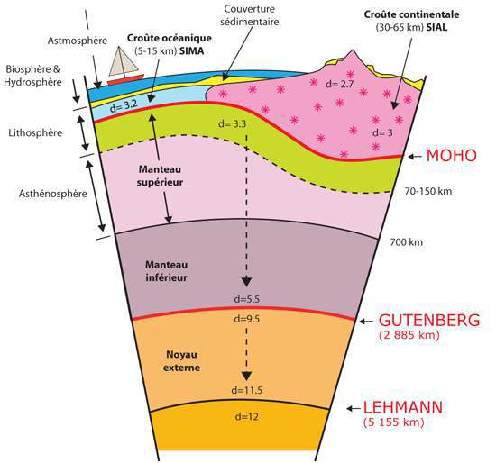
Croûte continentale vs croûte océanique
Ces deux types de croûte sont fondamentalement différents et il est crucial de les distinguer :
Croûte continentale : épaisseur 30-70 km (jusqu'à 80 km sous les chaînes de montagnes), densité ~2,7 g/cm³, composition granitique (riche en Si, Al). Elle est ancienne – certains cratons ont plus de 3 milliards d'années.
Croûte océanique : épaisseur 5-10 km, densité ~3,0 g/cm³, composition basaltique (riche en Fe, Mg). Elle est jeune – jamais plus de 200 millions d'années car elle est continuellement recyclée par subduction.
Conséquence clé : lorsque deux plaques entrent en collision, c'est toujours la plaque portant la croûte océanique (plus dense) qui plonge sous l'autre. C'est la subduction.
Lithosphère et asthénosphère – la rhéologie de la Terre
En géologie, on distingue deux autres enveloppes définies non par leur composition chimique, mais par leur comportement mécanique (rhéologie) :
La lithosphère : couche externe rigide et cassante, épaisseur ~100 km. Elle comprend la croûte + le manteau supérieur froid. C'est elle qui est découpée en plaques tectoniques.
L'asthénosphère : zone du manteau sous-jacente, ductile et capable de fluer lentement. Elle « lubrifie » le déplacement des plaques lithosphériques.
Cette distinction rigide/ductile est fondamentale : c'est parce que la lithosphère est rigide qu'elle se casse (failles), et c'est parce que l'asthénosphère est ductile que les plaques peuvent se déplacer.
Faille inverse — Le compartiment supérieur remonte le long du plan de faille. Fais tourner le bloc pour voir le déplacement.
Glisse pour faire tourner le bloc · molette ou pincement pour zoomer
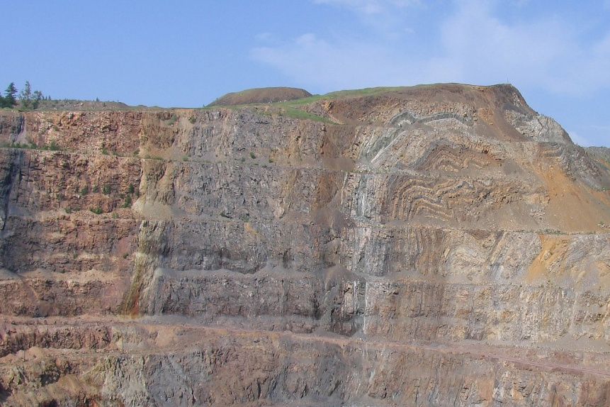
À retenir
Lithosphère = croûte + manteau supérieur froid → rigide → se fracture → donne des failles
Asthénosphère = manteau ductile → flue lentement → permet le déplacement des plaques
Croûte océanique → dense → plonge en subduction
Croûte continentale → légère → flotte, s'épaissit en chaîne de montagnes
1.2 Roches et minéraux
La lithosphère (littéralement, la « sphère de pierre ») est composée de roches. Avant de pouvoir classer une roche, il faut comprendre de quoi elle est faite. Sur le terrain, on raisonne toujours à deux échelles emboîtées : le minéral, puis la roche.
Un minéral est un solide naturel, inorganique, avec une composition chimique définie (ou variant dans des limites précises) et une structure cristalline ordonnée. C’est l’unité de base de toute roche. Une roche est un assemblage naturel d’un ou plusieurs minéraux. C’est cet assemblage – sa composition minéralogique, la taille des cristaux, leur agencement – qui détermine le nom de la roche et raconte son histoire.
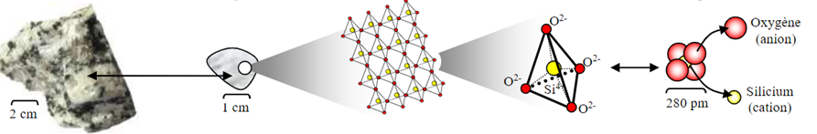
Roche Minéral Maille cristalline Atomes
Une poignée de minéraux – dits minéraux fondamentaux – suffit pour reconnaître la grande majorité des roches du terrain :
Minéral
Critères de reconnaissance sur le terrain
Quartz
Vitreux, incolore à gris fumé, cassure conchoïdale, très dur (raye le verre), pas de clivage net
Feldspaths
Blancs à roses (orthose) ou gris-blancs avec macles striées (plagioclase), clivage net à 90°, les plus abondants de la croûte
Micas
Clivage en feuillets fins et brillants ; biotite (noire) et muscovite (claire, argentée)
Amphiboles / Pyroxènes
Minéraux sombres (noirs à vert foncé), prismatiques, typiques des roches basiques (gabbro, basalte)
Olivine
Vert olive caractéristique, aspect vitreux, typique du manteau (péridotite)
Calcite
Tendre (dureté 3, s’érafle au couteau), réagit vivement à l’acide, clivage rhomboédrique net – minéral clé des roches carbonatées
C’est la nature de ces minéraux, leur proportion et leur arrangement (texture) qui permettent de ranger chaque roche dans l’une des trois grandes familles décrites ci-dessous.
1.3 Les trois familles de roches
Toute roche que tu rencontreras sur le terrain appartient à l'une de ces trois grandes familles. Savoir identifier rapidement la famille d'appartenance est la première étape de toute description lithologique.
1 – Les roches magmatiques (ou ignées)
Elles se forment par refroidissement et cristallisation d'un magma (roche en fusion). On les subdivise selon leur lieu de refroidissement :
Roches plutoniques (intrusives) : le magma refroidit lentement en profondeur → grands cristaux bien visibles à l'œil nu. Exemples : granite, gabbro, diorite.
Roches volcaniques (extrusives) : le magma sort en surface (lave) et refroidit rapidement → petits cristaux ou texture vitreuse. Exemples : basalte, rhyolite, andésite.
Roche
Caractéristiques principales
Granite / Granodiorite
Plutonique, croûte continentale, grands cristaux (quartz, feldspath, mica)
Volcanique, pâle, équivalent volcanique du granite
Péridotite
Plutonique, manteau supérieur, très sombre, olivine + pyroxène
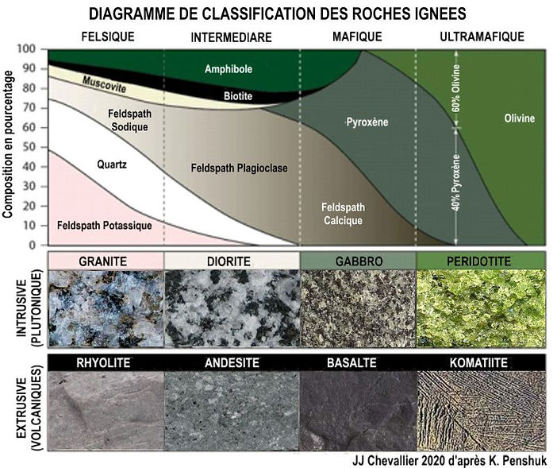
2 – Les roches métamorphiques
Elles résultent de la transformation à l'état solide d'une roche préexistante (quelle que soit sa nature) sous l'effet de la chaleur, de la pression, ou des deux. Le minéral d'origine se recristallise en nouveaux minéraux stables dans les nouvelles conditions.
On distingue deux grands types de métamorphisme :
Métamorphisme régional : lié aux grandes zones de collision ou de subduction. Affecte des volumes considérables de croûte. Donne des roches avec une foliation (schistosité, gneissosité) due à la pression dirigée.
Métamorphisme de contact (ou thermique) : lié à l'intrusion d'un corps magmatique chaud. Affecte une auréole de quelques mètres à quelques kilomètres autour de l'intrusion. Pas de foliation marquée.
Roche métamorphique
Caractéristiques / origine
Schiste
Métamorphisme faible, foliation bien marquée, micas visibles
Calcaire métamorphosé, texture grenue, réagit à l'acide
Quartzite
Grès métamorphosé, très dur, ne réagit pas à l'acide
Serpentinite
Péridotite hydratée, vert sombre, aspect gras, manteau supérieur
Métagabbro
Gabbro métamorphosé, reconnaissable aux pyroxènes et plagioclases
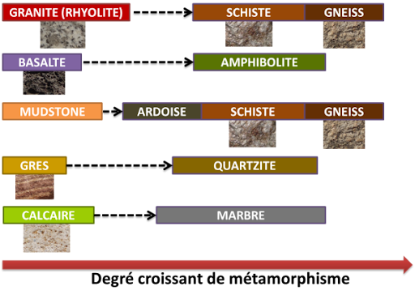
3 – Les roches sédimentaires
Elles représentent ~75 % des roches affleurantes en surface. Elles se forment par accumulation de sédiments (fragments de roches, restes d'organismes, précipités chimiques) qui se lithifient avec le temps. Elles sont stratifiées – c'est leur caractéristique fondamentale.
On distingue trois grandes catégories :
Roches détritiques : formées de fragments de roches transportés et déposés. La taille des grains reflète l'énergie du milieu de dépôt. Exemples : conglomérat (galet), grès (sable), siltite (silt), argilite (argile).
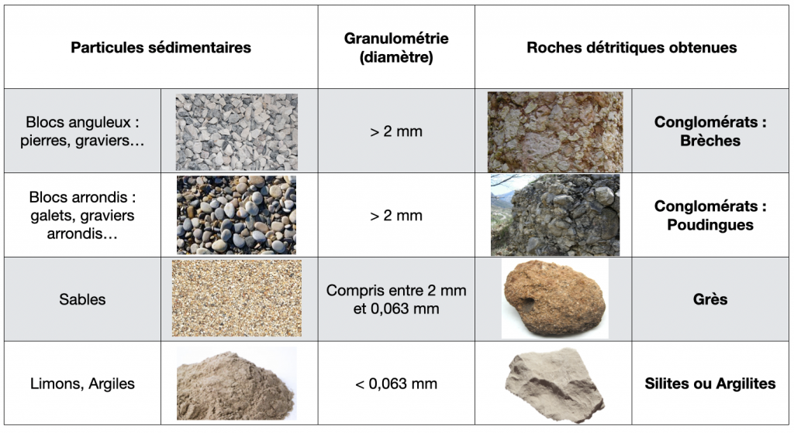
Roches carbonatées : formées par accumulation de carbonate de calcium (CaCO₃), souvent d'origine biologique. Exemples : calcaire, dolomie, craie. Test clé : elles réagissent à l'acide chlorhydrique dilué (HCl) en produisant des bulles de CO₂.
Roches évaporitiques : précipitées par évaporation d'eau de mer dans des bassins confinés. Exemples : gypse (dureté 2 sur l'échelle de Mohs – s'érafle à l'ongle), sel gemme, anhydrite.
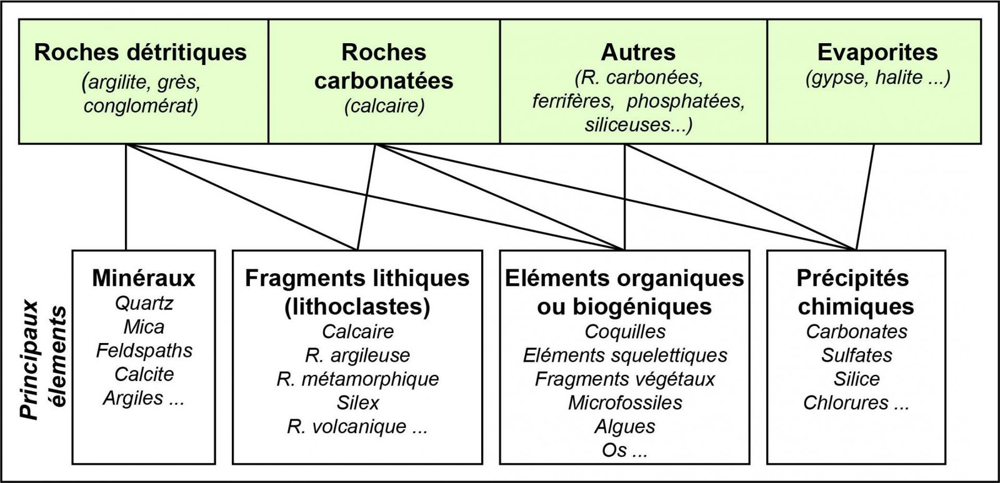
Test à l'acide – indispensable sur le terrain
Quelques gouttes d'acide chlorhydrique dilué (HCl 10 %) sur une roche :
Effervescence vive et immédiate → calcaire (carbonate de calcium CaCO₃)
Effervescence faible, seulement après avoir gratté → dolomie (carbonate de magnésium et calcium)
Pas de réaction → pas de carbonate (grès, quartzite, granite, basalte…)
Attention : toujours tester sur une surface fraîchement cassée, jamais sur la patine d'altération.
Le cycle des roches
Toute roche peut se transformer en une autre : une roche magmatique s'érode → sédiment → roche sédimentaire → enfouie et chauffée → roche métamorphique → fondue → magma → roche magmatique. Ce cycle est continu, mais très lent (millions à centaines de millions d'années).
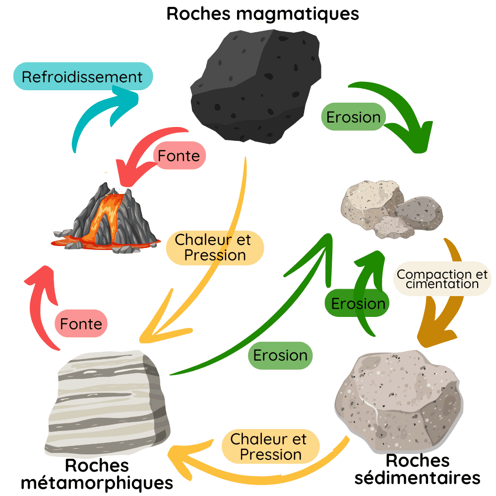
1.4 Contextes géodynamiques
La tectonique des plaques est le moteur de la géologie. Comprendre dans quel contexte géodynamique une région s'est formée permet de prédire quelles roches et quelles structures on va y rencontrer.
Les trois types de frontières de plaques
Divergence – les dorsales océaniques
Deux plaques s'écartent l'une de l'autre. Le manteau remonte, fond partiellement (décompression), et produit du magma basaltique qui forme une nouvelle croûte océanique. C'est l'accrétion océanique.
Exemple actuel : dorsale médio-atlantique, rift Est-africain
Convergence – subduction et collision
Deux plaques se rapprochent. Le résultat dépend de la nature des croûtes en présence :
Subduction (croûte océanique vs continentale, ou deux croûtes océaniques) : la plaque dense plonge dans le manteau. Fusion partielle → volcanisme d'arc, formation de roches plutoniques (granitoïdes d'arc). Métamorphisme haute-pression sur la plaque subduite.
Collision (deux croûtes continentales) : aucune des deux ne peut facilement plonger (trop légères). La croûte s'épaissit, se déforme, se plisse, se chevauche → formation d'une chaîne de montagnes. Métamorphisme régional. C'est le contexte des Alpes.
Roches et structures typiques de la collision :
Plis, chevauchements, nappes de charriage
Métamorphisme régional (schistes, gneiss)
Ophiolites charriées (vestiges d'un ancien océan fermé)
Décrochement – les failles transformantes
Deux plaques glissent horizontalement l'une contre l'autre. Pas de création ni de destruction de croûte. Structures typiques : failles décrochantes sub-verticales, bassins en pull-apart. Exemple : faille de San Andreas (Californie).
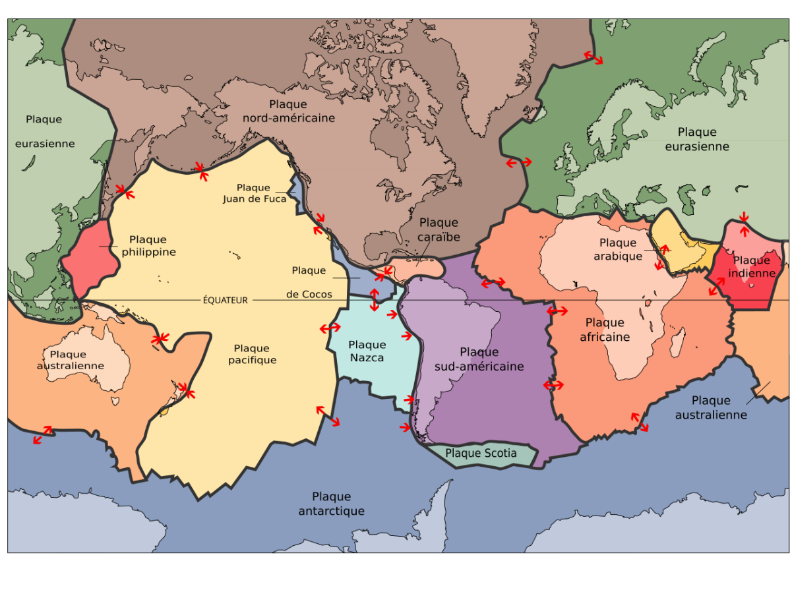
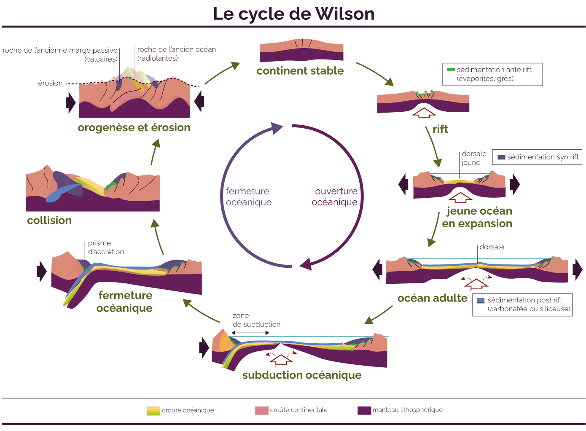
Synthèse de la Partie 1
Ce que tu dois savoir faire après cette partie
Décrire les grandes enveloppes de la Terre et distinguer lithosphère / asthénosphère
Différencier croûte continentale et croûte océanique
Identifier la famille d'une roche (magmatique / sédimentaire / métamorphique) à partir de ses caractéristiques visuelles
Associer un contexte géodynamique à ses roches et structures caractéristique
Les roches sédimentaires couvrent environ 75 % des surfaces continentales. Sur un terrain alpin comme celui que tu vas parcourir, la grande majorité des formations visibles sont sédimentaires. Savoir lire une roche sédimentaire, c'est savoir lire l'histoire d'un environnement de dépôt disparu – mer peu profonde, fleuve, lagon, bassin profond. Cette partie t'apprend à faire exactement cela, en trois temps : reconnaître la roche et décrire son faciès (2.1), comprendre les processus qui l'ont mise en place et lire les figures qu'ils ont laissées (2.2), puis restituer le milieu de dépôt (2.3).
2.1 Faciès et reconnaissance des roches sédimentaires
Cette section est un guide pratique de reconnaissance des principales roches sédimentaires que tu rencontreras en terrain alpin. Pour chaque roche : comment la reconnaître, comment la tester, et ce qu'elle t'apprend sur son milieu de dépôt. Mais avant de nommer une roche, il faut savoir la décrire – c'est l'objet de la notion de faciès.
Le principe d'actualisme
Toute cette partie repose sur un principe : les lois qui gouvernent la Terre aujourd'hui sont les mêmes que dans le passé. C'est l'actualisme — « le présent est la clé du passé ».
Si tu comprends comment une ride se forme aujourd'hui sur une plage, tu peux interpréter une ride fossilisée dans un grès de 150 millions d'années. Le mécanisme est le même, seul le temps les sépare. Sans ce principe, une roche sédimentaire resterait muette.
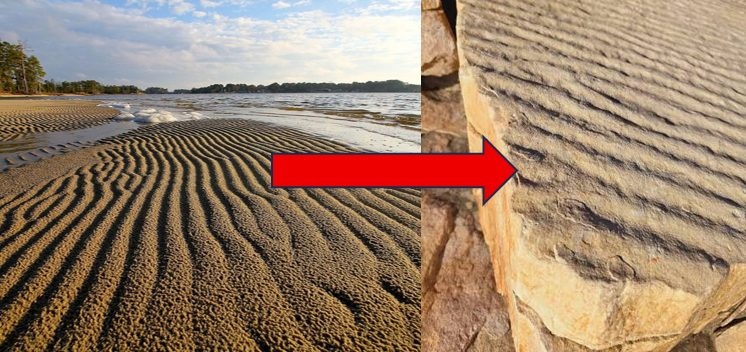
La notion de faciès sédimentaire
Le géologue de terrain est d'abord un naturaliste : devant un affleurement, la première question n'est pas « qu'est-ce que cela signifie ? » mais « qu'est-ce que j'observe ? ».
Le faciès sédimentaire est l'ensemble des caractéristiques observables d'une roche sédimentaire. On le décrit selon trois familles de critères.
Famille de critères
Ce que tu observes sur le terrain
Lithologie et texture
Nom de la roche · granulométrie (taille des grains) · pétrographie (nature minéralogique des grains) · morphoscopie (forme et usure des grains)
Figures et structures sédimentaires
Litage, laminations, rides, granoclassement, surfaces particulières (détaillées en 2.2)
Contenu paléobiologique
Éléments biominéralisés et fossiles · traces fossiles ou ichnofossiles
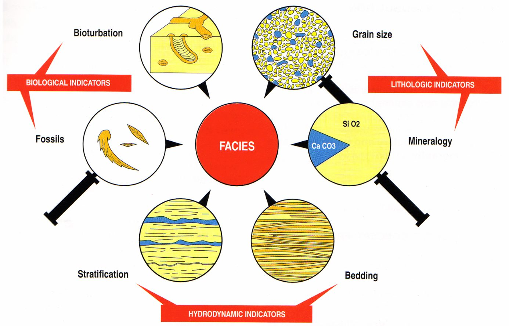
Les indicateurs qui composent un faciès sédimentaire. D'après Homewood et al. (2002).
Un faciès est donc la signature laissée par un environnement sédimentaire au moment du dépôt : identifier les faciès permet de reconstituer les environnements passés. Attention cependant – un faciès isolé donne une information très limitée. C'est la succession de faciès, telle qu'on la lit dans un log banc après banc, qui permet de reconstruire l'évolution d'un système au cours du temps, de repérer les variations du niveau marin et de suivre les migrations de dépôts (progradation, rétrogradation).
Sur le terrain – décrire un faciès en cinq points
Lithologie et couleur, sur cassure fraîche et sur surface altérée.
Granulométrie : taille des grains, tri (homogène ou non), forme (anguleux ou arrondis).
Géométrie du banc : épaisseur, continuité latérale, nature des limites (base érosive ? plane ? passage progressif ?).
Structures internes et de surface : laminations, rides, granoclassement, bioturbation (voir 2.2).
Contenu fossile : nature, abondance, état de conservation.
Et surtout : DECRIS D'ABORD, INTERPRETE ENSUITE – la règle d'or du carnet de terrain (voir 5.2).
Le cycle sédimentaire
Un cycle sédimentaire est la séquence ordonnée de processus qui contrôlent la production, le transport, le dépôt et la préservation des sédiments : altération / érosion → transport → sédimentation → diagenèse.
Ce cycle ne fonctionne pas de la même façon selon la famille de roches — c'est ce que montrent les trois schémas qui ouvrent chacune des sous-sections ci-dessous. Dans les archives géologiques, il se traduit par des successions de faciès qui enregistrent une évolution systématique du milieu.
Les carbonates
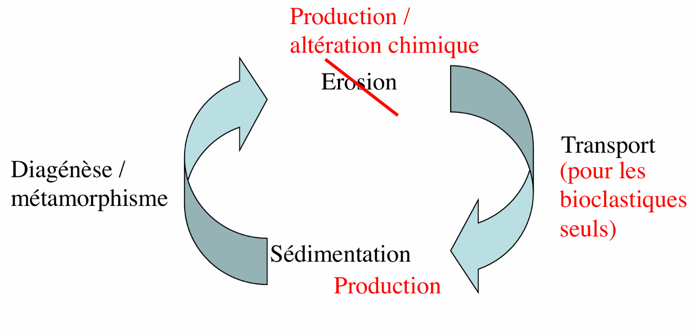
Le cycle des carbonates : le sédiment n'est pas seulement érodé puis transporté, il est produit sur place, par les organismes et par précipitation chimique. Le transport ne concerne que la fraction bioclastique.
Calcaire
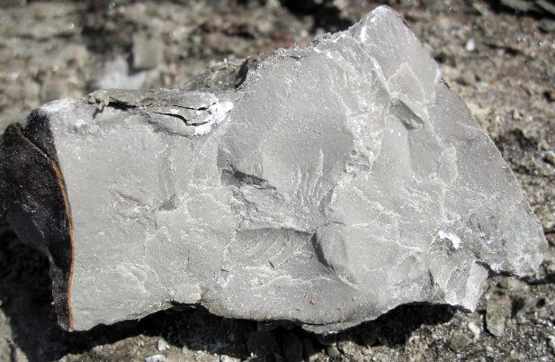
Roche composée majoritairement de carbonate de calcium (CaCO₃). C'est la roche sédimentaire la plus commune en terrain alpin mésozoïque.
Aspect : gris à beige, parfois sombre (riche en matière organique), parfois blanc (craie, calcaire de plateforme chaude)
Test à l'acide : effervescence vive et immédiate sur surface fraîche
Dureté : ~3 sur l'échelle de Mohs (ne raye pas le verre facilement, mais se raye avec un couteau)
Variantes importantes : calcaire micritique (boue carbonatée, grain très fin, mat), calcaire bioclastique (fragments de coquilles visibles), calcaire oolithique (grains sphériques concentriques ~0,5 mm), calcaire noduleux (bancs discontinus en nodules, milieu profond), calcaire massif (bancs épais résistants à l'érosion)
Dolomie
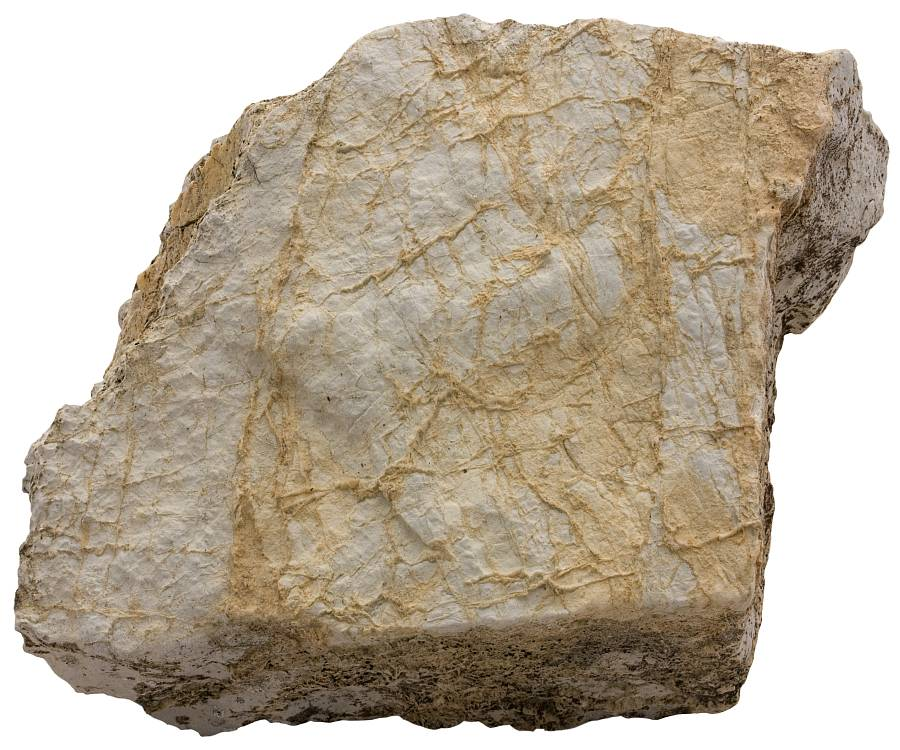
Roche composée de carbonate de calcium et de magnésium CaMg(CO₃)₂. Souvent issue d'une transformation diagénétique du calcaire (dolomitisation).
Aspect : gris clair à beige, souvent avec une patine orangée à rouille. Surface altérée rugueuse à granuleuse, parfois aspect « peau d'éléphant »
Test à l'acide : réaction faible à nulle sur surface fraîche. Effervescence notable seulement après avoir gratté (on expose une surface fraîche et pulvérulente)
Dureté : ~3,5–4 (légèrement plus dure que le calcaire)
Milieu de dépôt : marin peu profond à supratidal, souvent associé à des évaporites
Distinguer calcaire et dolomie – méthode terrain
Verser quelques gouttes de HCl 10 % sur une surface fraîchement cassée
Effervescence vive → calcaire
Pas de réaction → gratter avec le marteau, puis retester → effervescence → dolomie
Toujours pas de réaction → ni calcaire ni dolomie (grès, quartzite, roche magmatique…)
Si tu n'as pas d'acide : la dolomie est typiquement plus rugueuse en surface altérée et sonne légèrement différemment au marteau (son plus cristallin).
Marne
Roche mixte, intermédiaire entre argile et calcaire. Elle contient entre 35 % et 65 % de carbonate, le reste étant de l'argile.
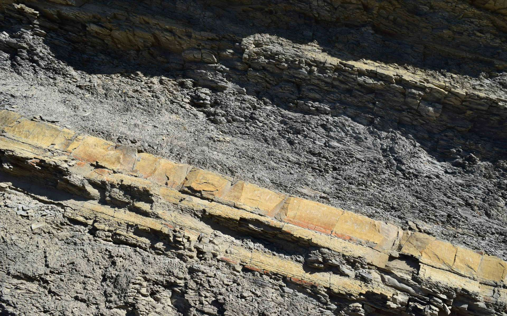
Aspect : gris à vert ou beige, peu résistante à l'érosion (forme souvent des pentes molles, des « bad-lands »)
Test à l'acide : effervescence modérée
Sur le terrain : les marnes laissent de fines traînées blanches sur les doigts (argile). Elles se délitent facilement en feuillets ou en éclats. Peu compétentes – elles créent des niveaux de glissement potentiels
Milieu : plateforme distale à bassin peu profond, dépôt en eaux calmes
Les roches silico-détritiques
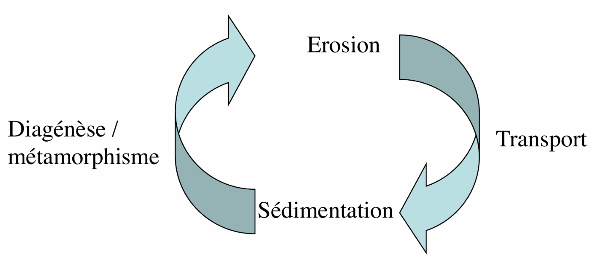
Le cycle détritique classique : érosion → transport → sédimentation → diagenèse. Ici le sédiment vient d'ailleurs — il n'est pas produit sur place.
La nomenclature des roches silico-détritiques dépend avant tout de la taille des particules qui les composent (classification d'Udden-Wentworth).
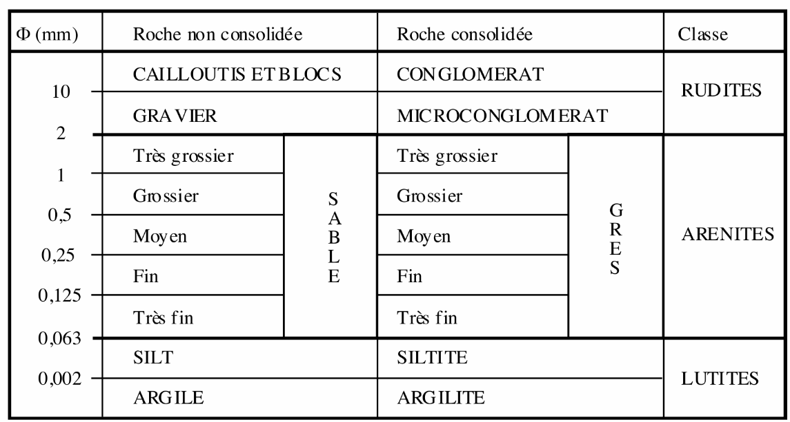
Classification granulométrique d'Udden-Wentworth : à chaque classe de taille correspondent un sédiment meuble et une roche consolidée.
Grès
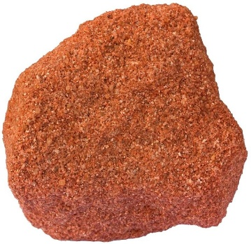
Roche sédimentaire détritique formée de grains de sable (0,063–2 mm) cimentés entre eux. Le grain dominant est souvent le quartz, très résistant à l'altération.
Aspect : variable (blanc, jaune, rouge, gris), texture grenue visible à l'œil nu ou à la loupe
Test à l'acide : pas de réaction si le ciment est siliceux. Réaction possible si le ciment est calcitique
Dureté : raye le marteau (car il contient du quartz, dureté 7)
Structures visibles : laminations obliques, rides de courant, granoclassement
Milieux : fluviatile (grès grossiers, laminés), littoral (grès bien triés), éolien (grès à grandes laminations obliques en dunes)
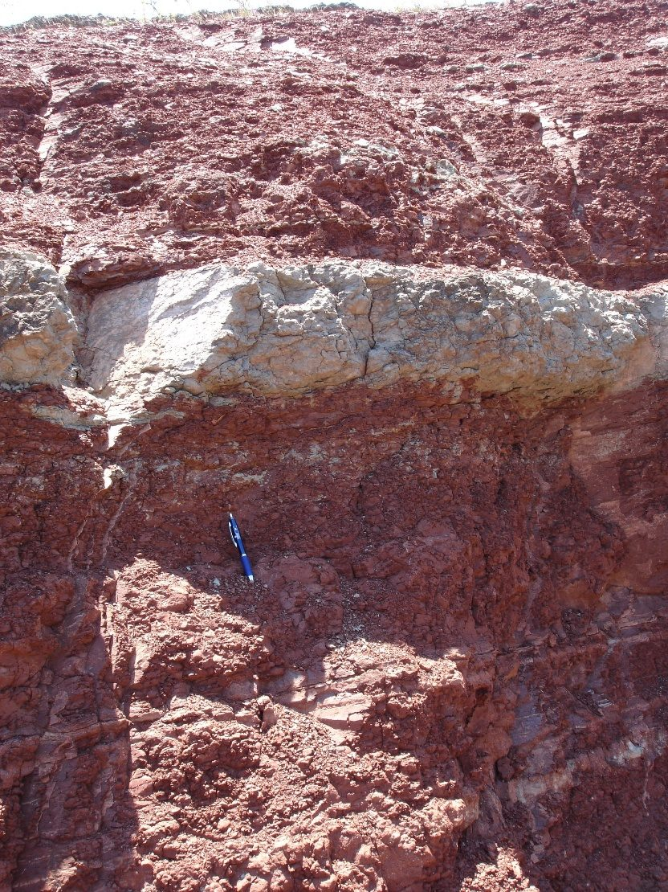
Argilite et siltite
Roches à grain très fin : l'argilite est formée de particules inférieures à 0,004 mm (argile), la siltite de particules comprises entre 0,004 et 0,063 mm (silt).
Aspect : gris, vert, rouge ou noir. Aspect mat, peut présenter une schistosité (feuilletage) si légèrement métamorphisée
Sur le terrain : l'argilite tache les doigts, a une texture savonneuse humide et colle légèrement à la langue
Milieux : plaine alluviale, lac, bassin marin calme, zone intertidale
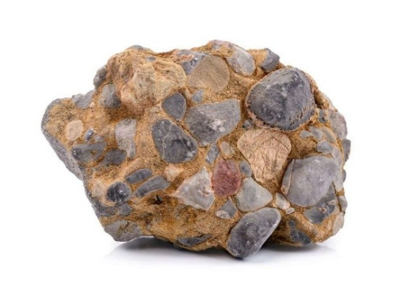
Conglomérat
Roche formée de galets (> 2 mm) ou de graviers cimentés. L'équivalent non consolidé est le gravier ou les alluvions grossières.
Aspect : hétérogène, galets arrondis (transport important) ou anguleux (brèche, peu de transport)
Ce que la forme des galets indique : galets très arrondis → long transport fluviatile ; galets anguleux → dépôt proche de la source, peu de transport (cône alluvial, éboulis)
Milieux : torrents, cônes alluviaux, littoral à haute énergie, base de séquence transgressive
Les évaporites
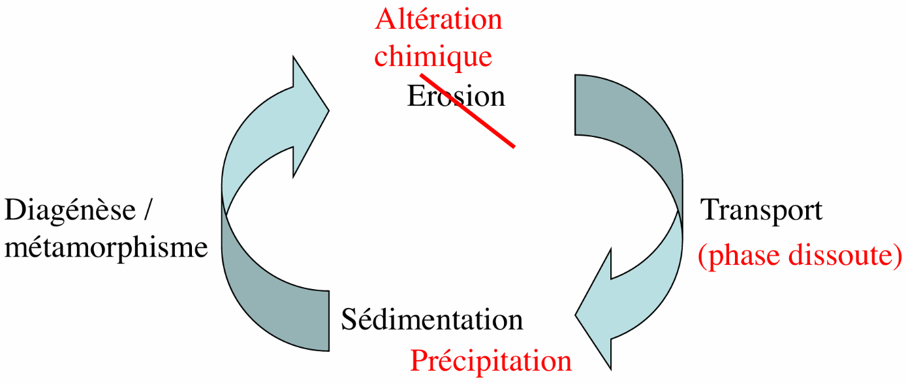
Le cycle des évaporites : le transport se fait en phase dissoute, et le dépôt par précipitation lors de l'évaporation.
Gypse
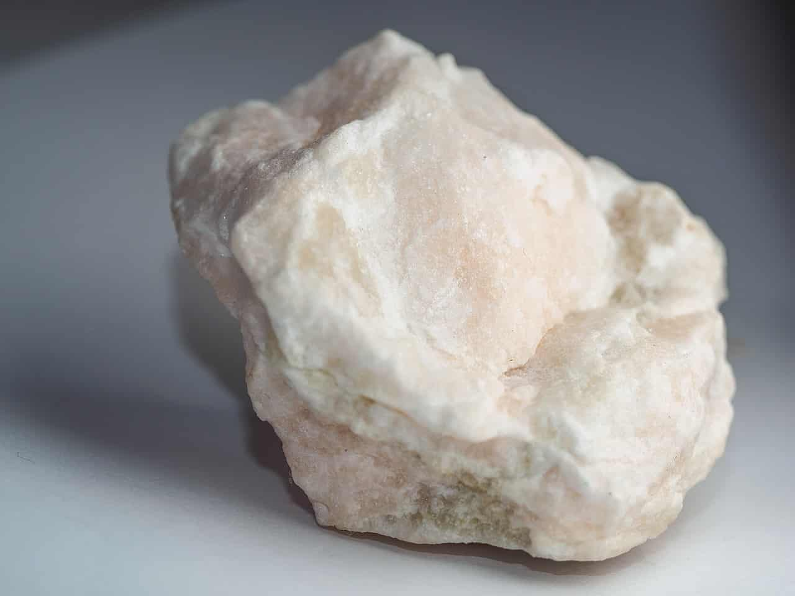
Sulfate de calcium hydraté (CaSO₄·2H₂O), formé par évaporation d'eau de mer dans un bassin confiné.
Aspect : blanc à translucide, parfois rosé ou gris. Peut être massif, fibreux (variété « satin spar ») ou granuleux
Dureté : 2 sur l'échelle de Mohs – s'éraflé facilement à l'ongle. C'est le test diagnostique par excellence
Milieu : marin très peu profond à supratidal, conditions d'évaporation intense (mer épicontinentale en climat aride)
Importance structurale : le gypse et les évaporites associées (sel, anhydrite) sont des niveaux de décollement majeurs. En terrain alpin, le Keuper (Trias supérieur) évaporitique joue souvent ce rôle de « savon » facilitant le glissement des nappes
Cargneule
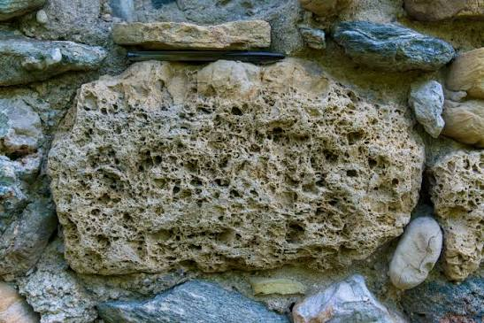
Roche carbonatée très poreuse, d'aspect caverneux et alvéolaire, résultant de la dissolution d'évaporites (gypse) remplacées par de la calcite ou de la dolomite.
Aspect : aspect de gruyère, beige à orangé, très légère pour son volume
Test à l'acide : réaction variable selon la proportion de carbonate résiduel
Signification : présence ancienne d'évaporites, niveau de décollement potentiel
Roche
Critères de reconnaissance
Milieu typique
Récapitulatif – reconnaissance rapide sur le terrain
Calcaire
Effervescence vive à l'acide, gris à beige
Marin, plateforme carbonatée
Dolomie
Effervescence faible (seulement après grattage), patine orangée rugueuse
Marin peu profond, lagune
Marne
Effervescence modérée, tache les doigts, érosion en pentes molles
Bassin calme, plateforme distale
Grès
Grain visible, raye le marteau, pas de réaction à l'acide (sauf si le ciment est de calcite)
Fluviatile, littoral, éolien
Argilite
Grain très fin, colle à la langue, tache les doigts
Lac, plaine alluviale, bassin
Conglomérat
Galets visibles, hétérogène, base de séquence
Torrent, cône alluvial, littoral
Gypse
S'éraflé à l'ongle (dureté 2), blanc à translucide
Évaporation, mer confinée
Cargneule
Aspect caverneux / alvéolaire, beige, très poreuse
Dissolution d'évaporites
À retenir – 2.1
Un faciès = lithologie + structures + contenu paléobiologique. Il se décrit avant d'être interprété.
Un faciès isolé dit peu de chose : c'est la succession de faciès qui raconte une histoire.
Le test à l'acide discrimine calcaire / dolomie / marne – c'est le geste de terrain le plus rentable.
Les trois familles ne se fabriquent pas de la même façon : les détritiques sont transportés, les carbonates sont produits sur place, les évaporites précipitent.
Gypse et cargneule signalent d'anciennes évaporites, donc un niveau de décollement potentiel : à repérer systématiquement en terrain alpin.
2.2 Transport et structures sédimentaires
Une roche sédimentaire n'enregistre pas seulement la nature de son sédiment, mais aussi la façon dont il est arrivé là. Comprendre les mécanismes de transport permet de lire directement les figures observées sur le terrain – et inversement, de remonter d'une figure au courant qui l'a produite.
La nature des courants
Dans les milieux sédimentaires, la circulation de l'eau, du vent, de la glace et l'action de la gravité déplacent les particules. Selon la nature du courant, ces particules ne se comportent pas de la même manière, et cette dynamique conditionne directement les faciès observés sur le terrain.
On distingue d'abord les courants unidirectionnels, typiques des rivières, des chenaux et des courants gravitaires : ils se déplacent dans une seule direction et exercent une force continue sur les particules. À l'inverse, les courants oscillatoires, liés à l'action des vagues et de la marée, alternent entre deux directions opposées : ils ne produisent pas de déplacement net des particules à long terme, mais ils remobilisent régulièrement le sédiment.
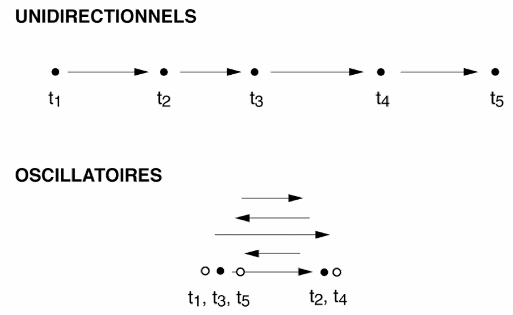
Courants unidirectionnels et courants oscillatoires : trajectoire d'une particule au cours du temps.
Les courants peuvent en outre être permanents ou non permanents (épisodiques). Certains conservent une vitesse stable au cours du temps, tandis que d'autres connaissent des variations brutales lors de crues, de tempêtes ou d'événements ponctuels. Ces pics d'énergie expliquent la présence de dépôts grossiers intercalés dans des séries plus fines, ou des successions de faciès très contrastés.
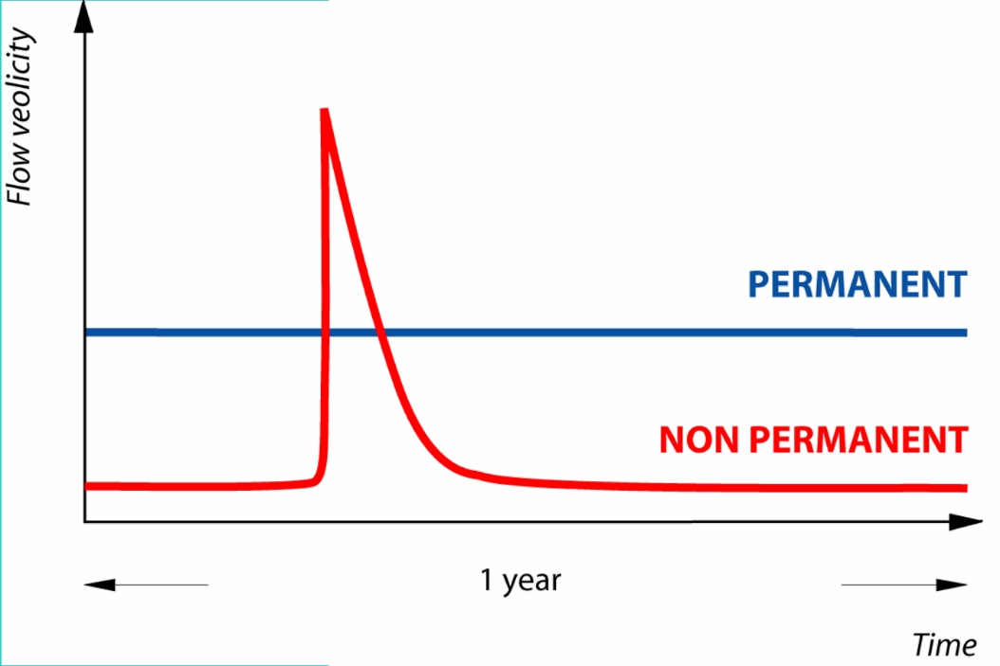
Régime permanent et régime non permanent : évolution de la vitesse du courant au cours d'une année.
Les modes de transport
L'énergie du courant détermine la façon dont chaque particule voyage :
Traction (roulement, glissement) : les grains les plus grossiers se déplacent au contact du fond, quand l'énergie est élevée.
Saltation : les grains effectuent de petits sauts successifs – le courant est assez fort pour les soulever, pas assez pour les maintenir en suspension.
Suspension : silts et argiles sont portés par la turbulence de la colonne d'eau. Ils ne se déposent que lorsque l'énergie diminue, ce qui explique la présence de niveaux fins dans les milieux calmes ou distaux.
Solution : une partie des éléments chimiques voyage dissoute, sans phase solide. C'est le mode dominant dans les milieux carbonatés et évaporitiques.
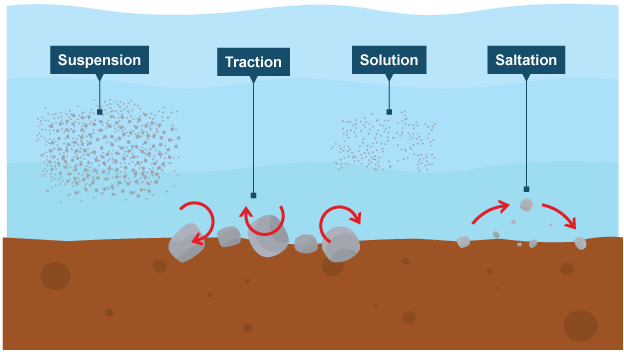
Les modes de transport des particules dans un courant.
Le diagramme de Hjulström
Ce diagramme relie la vitesse du courant et la taille des grains, et délimite trois domaines : érosion, transport, sédimentation.
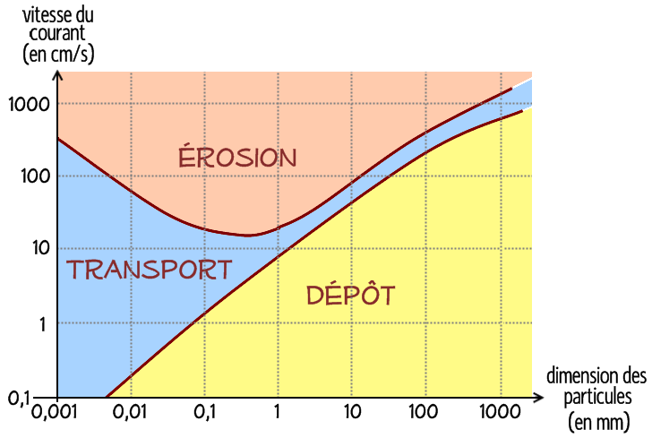
Diagramme de Hjulström. La courbe supérieure donne la vitesse nécessaire pour éroder un grain déjà déposé ; la courbe inférieure, la vitesse en dessous de laquelle il se dépose.
Il livre un résultat contre-intuitif : les grains les plus faciles à arracher sont les sables fins (~0,2 mm), pas les argiles. Plus fines, les particules argileuses sont cohésives – elles se collent entre elles, et il faut autant d'énergie pour les éroder que pour déplacer un gravier.
Les structures sédimentaires
Les structures sédimentaires sont des figures formées dans les sédiments au moment de leur dépôt ou juste après. Elles sont essentielles pour deux raisons : elles renseignent sur le milieu de dépôt et sur la dynamique des courants, et elles permettent de déterminer la polarité stratigraphique – c'est-à-dire de savoir où sont le sommet et la base d'une couche, information cruciale quand les séries sont tectoniquement perturbées.
Pourquoi la polarité est-elle critique sur le terrain ?
Dans une région tectoniquement active comme les Alpes, les couches peuvent être inclinées, renversées, voire complètement retournées par des plis ou des chevauchements. Sans critères de polarité, on ne peut pas savoir si une série est normale (couche la plus ancienne en bas) ou inverse (couche la plus ancienne en haut). La détermination de la polarité est donc une étape obligatoire dès que les couches sont fortement inclinées.
Les figures de courant unidirectionnel
Formation d'une ride de courant
Les rides sont l'expression du mouvement du fluide à la surface du sédiment : l'eau ou le vent mobilise et organise les particules perpendiculairement au courant. Les plus fréquentes sont les rides asymétriques, produites par un courant unidirectionnel. Elles présentent un versant amont doux, exposé au courant (stoss side), et un versant aval plus raide, à l'abri (lee side).
Le versant amont est érodé par le courant, et les particules sédimentent en micro-avalanches successives sur le versant aval. Ces avalanches construisent des laminations obliques inclinées dans le sens du courant : c'est le critère de terrain qui permet de restituer un paléocourant.
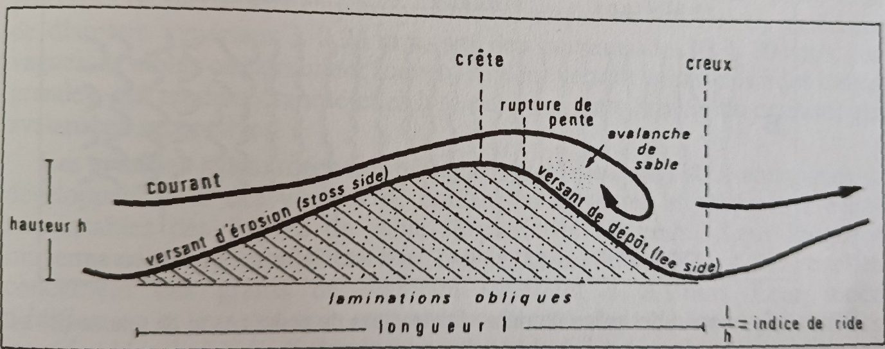
Formation et caractères d'une ride sédimentaire asymétrique.
La succession des figures selon l'énergie du courant
À mesure que la vitesse du courant augmente, un fond sableux passe par une succession de figures caractéristiques. Attention : cette succession dépend aussi de la granulométrie. Les mégarides ne se forment pas dans les silts et les sables très fins, et les rides ne se forment pas dans les sables grossiers et les graviers.
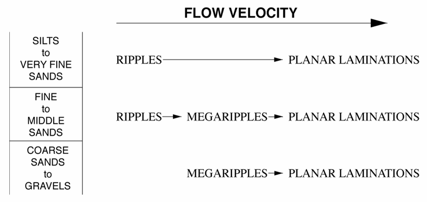
Succession des figures de courant unidirectionnel en fonction de la vitesse du courant et de la taille des grains. D'après Harms et al. (1975).
Figure
Énergie
Description
Dans la roche
Fond plan de basse énergie (lower plane bed)
Très faible
Le courant ne suffit pas à structurer le fond. En sable fin, peu ou pas de transport ; en sable grossier, transport par traction sur un fond resté plat.
Laminations planes
Rides de courant (small ripples)
Faible à modérée
λ ≈ 10–30 cm (jusqu'à 60 cm), hauteur ≈ 0,3–6 cm. Sables fins à moyens. Présentes dans la plupart des milieux, continentaux comme marins.
Laminations obliques centimétriques – excellent indicateur de paléocourant et de polarité
Mégarides ou dunes (megaripples)
Forte
λ dépassant le mètre, hauteur de plusieurs décimètres. Sables moyens à grossiers. Crêtes souvent irrégulières (formes 3D).
Stratifications obliques décimétriques à métriques, souvent en auge (festons)
Fond plan de haute énergie (upper plane bed)
Très forte
Le courant est trop intense pour que les mégarides subsistent. Transport par traction et saltation contre le fond.
Laminations planes, stries longitudinales (linéation de délit) et figures d'impact et d'érosion
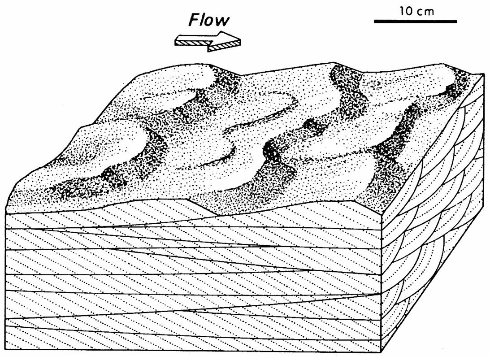
Mégarides et stratifications obliques associées. D'après Harms et al. (1975).
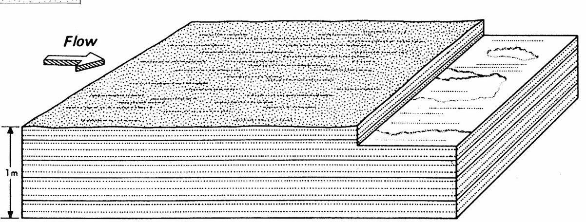
Fond plan de haute énergie et laminations planes associées. D'après Harms et al. (1975).
Comme pour les courants unidirectionnels, les figures produites par les vagues dépendent de l'intensité du courant oscillatoire.
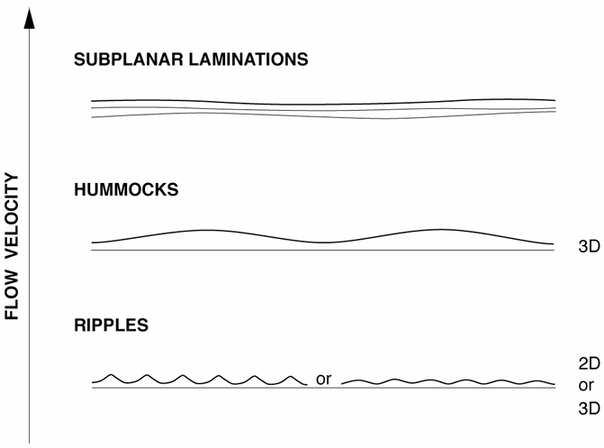
Succession des figures de courant oscillatoire selon l'énergie : rides de vagues → hummocks → laminations subplanes.
Les rides symétriques (rides de vagues)
Elles se forment sous l'action des vagues, sur les plages et les fonds peu profonds, au-dessus de la limite d'action des vagues de beau temps. Le mécanisme est le même que pour les rides asymétriques, mais les deux flancs sont ici en sédimentation : les laminations obliques sont symétriques, en chevron, et suivent approximativement le contour de la ride.
Conséquence pratique : les rides de vagues donnent l'orientation du paléocourant, mais pas son sens.
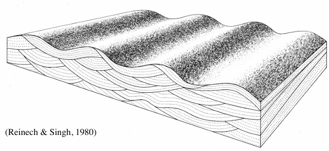
Rides symétriques et laminations en chevron. D'après Reineck et Singh (1980).
Lorsque l'énergie augmente – typiquement lors d'une tempête – le fond se structure en ondulations larges et de faible amplitude, les hummocks. Les laminations qui en résultent sont ondulées, à faible angle, et se recoupent en dômes et en creux : c'est la stratification entrecroisée en mamelons (HCS, hummocky cross-stratification).
C'est la signature classique des dépôts de tempête, ou tempestites, mis en place entre la limite d'action des vagues de beau temps et celle des vagues de tempête. Au-delà, l'énergie efface toute ondulation et le fond redevient plan (laminations subplanes).
Sur le terrain – ride de vague ou ride de courant ?
Deux flancs de pente équivalente, crêtes pointues et creux arrondis → ride de vague (courant oscillatoire) → milieu marin peu profond agité.
Un flanc doux, un flanc raide → ride de courant (courant unidirectionnel) → le flanc raide indique le sens du paléocourant.
Crêtes sinueuses qui se bifurquent → plutôt des rides de vagues.
Dans les deux cas, mesure l'orientation des crêtes à la boussole et note-la dans le carnet : c'est une donnée de paléocourant exploitable au retour.
Les autres figures sédimentaires
Granoclassement
À l'intérieur d'un même banc, la taille des grains diminue progressivement de la base vers le sommet (granoclassement normal) – ou augmente (granoclassement inverse, plus rare). Le granoclassement normal est produit par décantation progressive lors d'une turbidite ou d'une crue.
Critère de polarité : le grain le plus grossier est à la base – c'est donc le bas du banc.
Milieu : turbidites (dépôts de courants de turbidité en milieu profond), cônes alluviaux, crues.
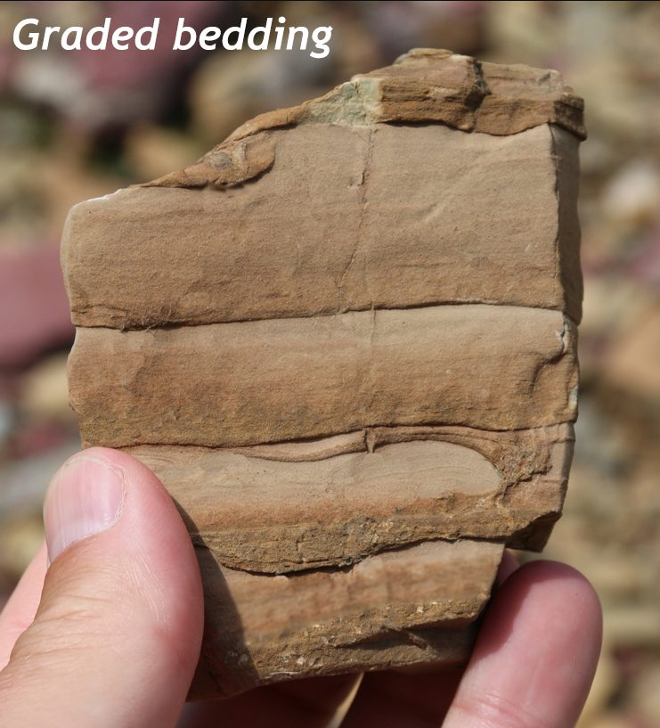
Granoclassement normal dans un banc.
Hardground
Surface d'arrêt de sédimentation, souvent perforée et incrustée par des organismes fixés (huîtres, bryozoaires, serpules). Le sédiment sous la surface est induré (durci) par cimentation précoce.
Signification : ralentissement ou arrêt complet de la sédimentation. Souvent associé à une remontée du niveau marin ou à un changement de régime sédimentaire.
Sur le terrain : surface irrégulière et colorée (souvent rougeâtre par oxydation), parfois riche en fossiles condensés (accumulation de fossiles de plusieurs niveaux).
Critère de polarité : les perforations d'organismes foreurs s'enfoncent vers le bas, depuis la surface – elles indiquent donc le sommet du banc induré.
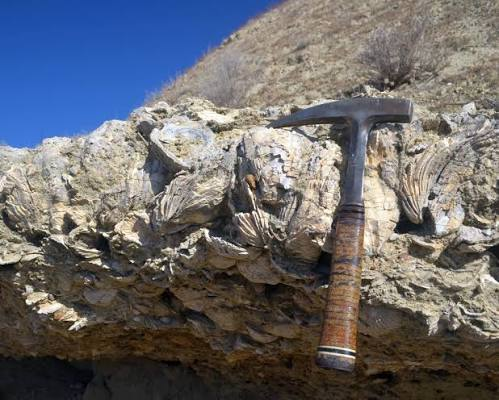
Surface de hardground perforée.
Stylolithes
Surfaces irrégulières en dents de scie visibles dans les calcaires, résultant d'une dissolution sous pression (compaction chimique). Les stylolithes se développent perpendiculairement à la contrainte principale de compaction, généralement la charge sédimentaire verticale.
Sur le terrain : surfaces sombres (enrichies en insoluble argileux), en dents de scie ou en colonnettes. Se forment après le dépôt, lors de l'enfouissement.
Indice structural – et non critère de polarité : dans une série non déformée, les stylolithes de compaction sont sub-horizontaux. S'ils sont verticaux ou fortement inclinés, c'est que la série a été basculée ou que des stylolithes tectoniques se sont développés. Ils te disent que la série a été déformée, pas où est le haut.
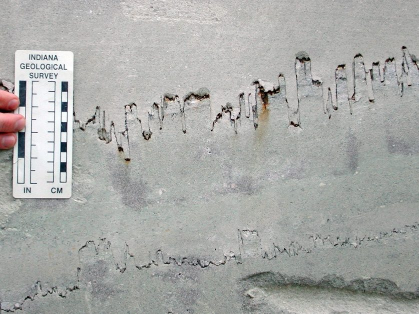
Stylolithes dans un calcaire.
Figures de semelle (sole marks)
Les figures de semelle sont des moulages conservés à la base des bancs gréseux ou calcaires déposés sur un substrat argileux. Le mécanisme est toujours le même : une dépression se creuse – ou une déformation s'amorce – dans la boue encore molle, puis le sédiment du dépôt suivant la remplit et en prend l'empreinte. Comme le moulage fait saillie vers le bas, il indique sans ambiguïté la base du banc.
Ces figures s'observent donc sur la face inférieure des bancs, en relief. Elles sont particulièrement fréquentes dans les séries turbiditiques, où chaque banc gréseux repose sur les argiles du dépôt précédent – un contexte omniprésent dans la région de Digne.
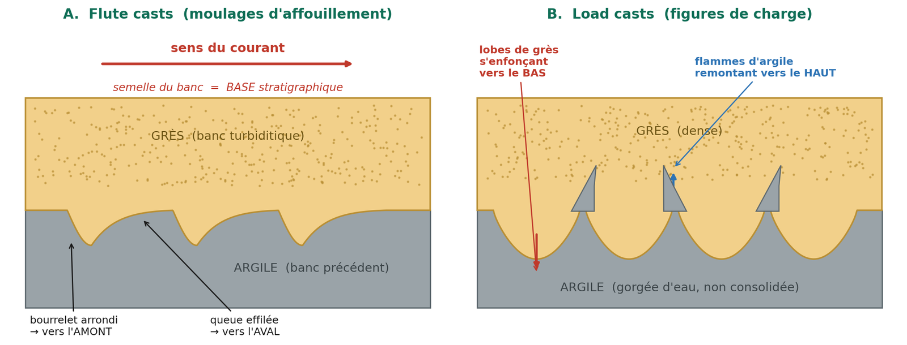
Les deux principales figures de semelle. A. Flute casts : le courant creuse une dépression dans la boue, profonde et arrondie en amont, effilée en aval ; le sable la moule. B. Load casts : sans courant, le sable dense s'enfonce par gravité dans la boue gorgée d'eau, qui remonte en flammes entre les lobes.
Flute casts (moulages d'affouillement)
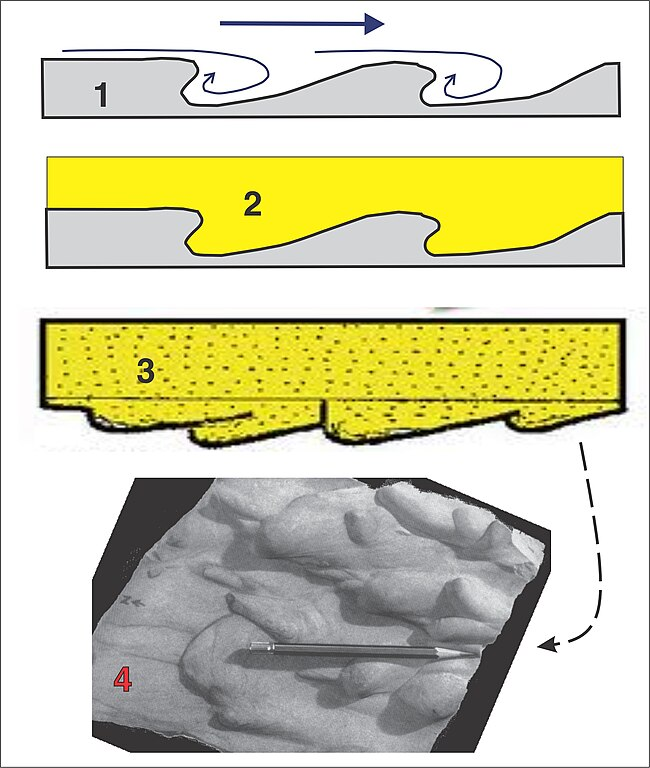
Un tourbillon du courant creuse dans la boue une dépression allongée, profonde et arrondie du côté amont, qui s'évase et s'atténue progressivement vers l'aval. Le sable transporté par le courant la remplit ensuite et la moule.
Aspect : bosses allongées en cuillère ou en langue, de quelques centimètres à quelques décimètres, saillant sous le banc. Elles sont généralement nombreuses, parallèles entre elles et orientées de la même façon.
Critère de polarité : les moulages sont en relief sur la face inférieure du banc. La surface qui les porte est donc la base.
Bonus – paléocourant : le bourrelet arrondi pointe vers l'amont, la queue effilée vers l'aval. Le flute cast est ainsi l'un des rares critères qui donne à la fois la polarité et le sens du courant.
Load casts (figures de charge)
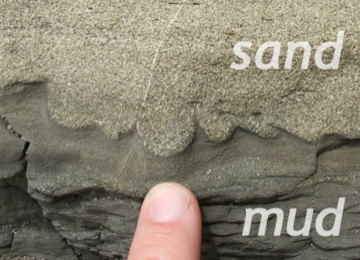
Ici, aucun courant n'est en jeu : il s'agit d'une déformation gravitaire postérieure au dépôt. Du sable dense se dépose sur une boue gorgée d'eau et non consolidée ; sous l'effet de la charge, le sable s'enfonce dans la boue en lobes arrondis, tandis que la boue, moins dense, remonte entre les lobes sous forme de flammes (flame structures).
Aspect : bourrelets et lobes arrondis, en « coussins » ou en « ballons », saillant sous la base du banc. Dans les cas extrêmes, les lobes se détachent complètement et forment des boules isolées dans l'argile (pseudo-nodules, ball-and-pillow).
Critère de polarité : les lobes de grès s'enfoncent vers le bas, les flammes d'argile pointent vers le haut. Le critère reste lisible même dans une série renversée.
Attention : contrairement aux flute casts, les figures de charge ne donnent pas le paléocourant.
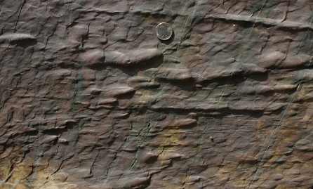
À signaler également – les groove casts (moulages de sillons)
Sillons rectilignes et parallèles creusés dans la boue par un objet traîné sur le fond (galet, fragment de coquille), puis moulés par le sable. Ils donnent la polarité – en relief sous le banc, comme les précédents – et l'orientation du courant, mais pas son sens.
Sur le terrain – trouver et lire une semelle
Les figures de semelle ne se voient que sur la face inférieure des bancs : cherche les blocs éboulés retournés au pied de l'affleurement, c'est souvent le seul endroit où la semelle est accessible.
Vérifie que le relief est bien en saillie (convexe) : c'est le moulage gréseux. Le creux correspondant reste dans l'argile, qui est rarement conservée.
Ne les confonds pas avec des bioturbations : les figures de semelle sont régulières, alignées et orientées de façon cohérente ; les terriers sont anarchiques et souvent circulaires en section.
Si tu vois des flute casts, mesure leur orientation à la boussole : c'est une donnée de paléocourant directement exploitable au retour.
Fentes de dessiccation
Fissures polygonales formées par le retrait d'argiles humides lors de leur exposition à l'air. Elles sont ouvertes vers le haut, où elles s'évasent.
Signification : émersion temporaire – le fond était exondé. Milieu de plaine alluviale, lagon peu profond, sebkha.
Critère de polarité : les fentes s'élargissent vers le haut stratigraphique.
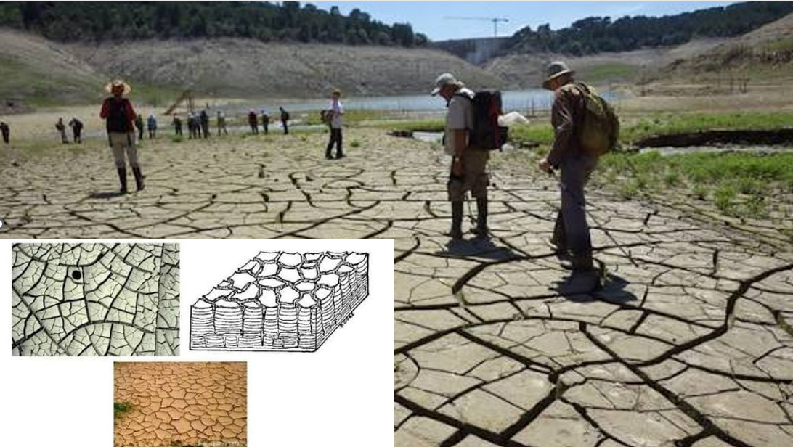
Fentes de dessiccation polygonales.
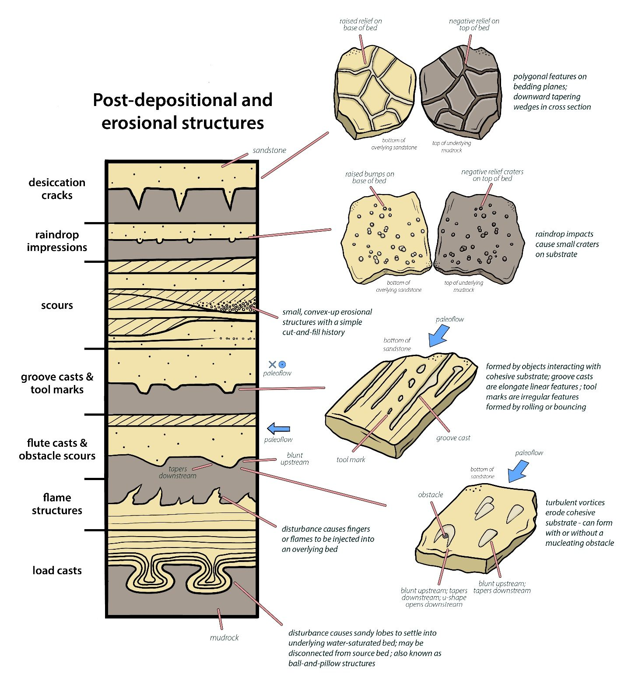
Bioturbation et ichnofossiles
L'activité des organismes provoque, en surface et au sein des dépôts, des perturbations du sédiment : c'est la bioturbation. Les traces qui en témoignent (terriers, pistes, empreintes) sont les ichnofossiles. Une bioturbation intense peut effacer complètement les autres structures sédimentaires.
Zoophycos : trace en spirale ou en éventail produite par un organisme fouisseur en milieu marin calme et profond. Très caractéristique des milieux marno-calcaires de plateforme distale.
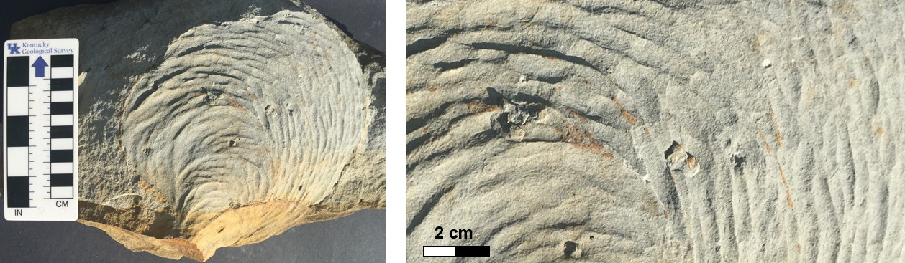
Zoophycos – trace fossile en éventail.
En fonction du type d'ichnofossile, il est donc possible de préciser l'environnement de dépôt, en complément des informations données par la roche elle-même.
Structure
Critère observé
Comment lire la polarité
Récapitulatif – critères de polarité stratigraphique
Laminations obliques
Terminaison des lamines
La base du banc est la surface vers laquelle les lamines convergent en biseau
Granoclassement normal
Taille des grains
Base = grains grossiers, sommet = grains fins
Rides (courant ou vagues)
Crêtes des rides
Les crêtes pointent vers le haut stratigraphique
Flute casts
Moulages en relief sous le banc
La surface qui porte les moulages est la base ; le bourrelet arrondi pointe vers l'amont
Figures de charge (load casts)
Lobes de grès et flammes d'argile
Les lobes s'enfoncent vers le bas, les flammes pointent vers le haut
Groove casts
Sillons rectilignes en relief
La surface qui porte les sillons est la base du banc
Fentes de dessiccation
Ouverture des fentes
Les fentes s'évasent vers le haut
Hardground perforé
Sens des perforations
Les perforations partent de la surface et pénètrent vers le bas
Stylolithes
Orientation
Ne donne pas la polarité – indique seulement que la série a été enfouie, puis éventuellement basculée
Courant unidirectionnel (rivière, turbidite) → figures asymétriques → on retrouve le sens du paléocourant. Courant oscillatoire (vagues) → figures symétriques → on retrouve seulement l'orientation.
La séquence rides → mégarides → fond plan traduit une énergie croissante, mais dépend aussi de la taille des grains.
Les quatre modes de transport : traction, saltation, suspension, solution.
Critères de polarité fiables et faciles : granoclassement, laminations obliques, crêtes de rides, fentes de dessiccation — et, sous les bancs turbiditiques, les figures de semelle (flute casts et load casts).
Le stylolithe n'est pas un critère de polarité.
Réflexe de terrain : dès qu'une couche penche fortement, cherche un critère de polarité avant d'interpréter la série.
2.3 Les milieux de dépôt
Pourquoi le milieu de dépôt est-il important ?
L'environnement de dépôt contrôle tout : la granulométrie des sédiments (l'énergie du milieu), leur composition chimique (salinité, oxygénation), les fossiles présents et les structures sédimentaires qui s'y forment. En reconstituant la succession des milieux de dépôt à travers le temps, on reconstitue l'histoire paléogéographique d'une région.
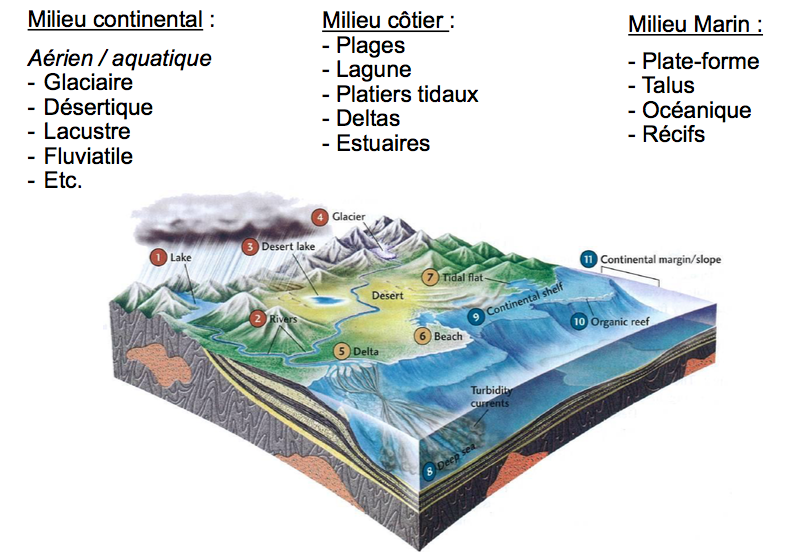
Les principaux milieux de dépôt et leurs figures sédimentaires caractéristiques.
Le milieu continental
Les systèmes fluviatiles
Les systèmes fluviatiles sont le principal vecteur des sédiments détritiques issus de l'érosion des reliefs. Une partie de la charge se dépose sur le continent, l'autre atteint l'océan. Le type de système dépend surtout de la distance au relief : cônes alluviaux au pied des montagnes, puis systèmes en tresses et enfin méandriformes vers l'aval.
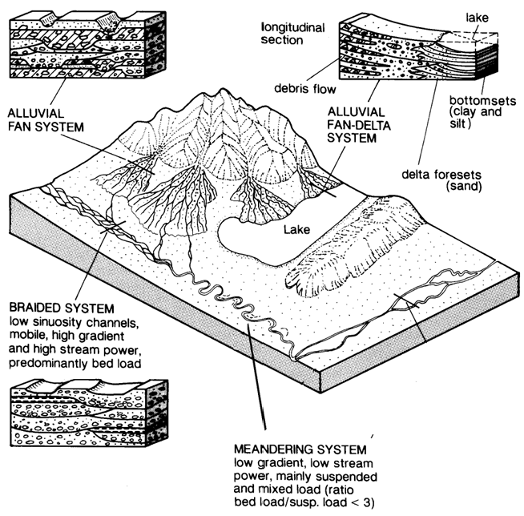
Organisation des systèmes de dépôt continentaux, du relief vers le bassin.
Les cônes alluviaux
Corps sédimentaires en forme d'éventail, constitués de matériaux grossiers, qui se développent au pied d'un relief à la faveur d'une rupture de pente (l'apex). Les cônes alluviaux apparaissent fréquemment en contexte de tectonique active, où des montagnes en surrection bordent des zones subsidentes ; la coalescence de plusieurs cônes forme un vaste ensemble appelé piémont.
Leur pente est régulière, de l'ordre de 3 à 6°. Leur taille varie énormément, de quelques centaines de mètres à plusieurs dizaines de kilomètres (les plus grands, les mégacônes, peuvent dépasser la centaine de kilomètres). Les sédiments y sont immatures et très mal triés, et leur granulométrie décroît rapidement en s'éloignant de l'apex ; leur composition reflète directement la nature des roches du bassin versant. En amont, les dépôts proviennent surtout de coulées de débris ou de boue, processus assez énergétiques pour transporter des blocs ; en aval, ils s'organisent en couches plus ou moins parallèles, accumulées lors des crues qui redistribuent les matériaux sur la surface du cône.
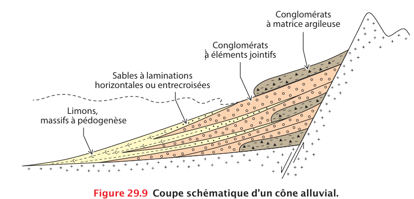
Coupe schématique d'un cône alluvial.
Chenaux, berges et plaine d'inondation
Les dépôts fluviatiles correspondent aux sédiments accumulés dans les lits des cours d'eau. Leur organisation dépend fortement de la morphologie du chenal, elle-même contrôlée par la sinuosité, la charge sédimentaire et l'énergie du système.
Type de chenal
Sinuosité
Caractères et corps sédimentaires
Rectiligne
Faible
Rare dans la nature. Bancs sableux régulièrement espacés, migrant lentement vers l'aval. Dès que le courant est dévié, le tracé devient sinueux.
En méandres
Élevée
Chenal unique très sinueux : érosion sur la rive concave, dépôt sur la rive convexe. Les bancs mobiles deviennent des barres de méandre (point bars) qui s'agrègent par accrétion latérale.
En tresses
Faible
Un chenal principal se divise en chenaux secondaires contournant des îlots sableux ou graveleux. Bancs longitudinaux, aggradation verticale.
Anastomosé
–
Plusieurs chenaux stables se séparent et se rejoignent dans la plaine alluviale, formant un réseau permanent.
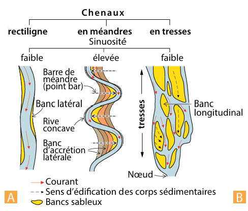
Les trois grands types de chenaux et leurs corps sédimentaires.
Les dépôts fluviatiles se regroupent ensuite en trois ensembles :
Dépôts de chenal : sédiments grossiers puis sableux qui comblent progressivement le lit du cours d'eau. Discontinus, souvent organisés en lentilles ou en corps allongés à base érosive.
Dépôts de berge : mis en place lors des crues, quand le cours d'eau déborde de son lit. Les sédiments les plus grossiers se déposent immédiatement au bord du chenal ; granulométrie et épaisseur décroissent très rapidement en s'éloignant du lit.
Dépôts de plaine d'inondation : sédiments fins (limons, argiles laminées) déposés lors des crues exceptionnelles. En période de crue, des sols hydromorphes se développent ; en période d'étiage, l'abaissement de la nappe phréatique favorise la formation de nodules calcaires, la marmorisation (oxydation du fer) et les fentes de dessiccation.
Cette succession chenal → berge → plaine d'inondation constitue la base de la lecture d'un affleurement fluviatile : elle permet de comprendre la dynamique du cours d'eau, la répartition des faciès et l'évolution du paysage alluvial.
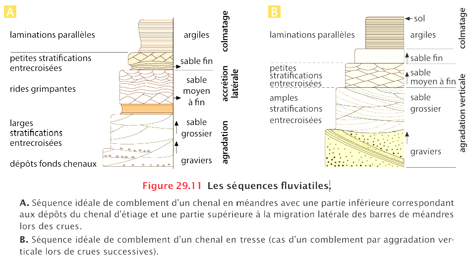
Séquences fluviatiles types. A. Comblement d'un chenal en méandres (accrétion latérale, migration des barres de méandre lors des crues). B. Comblement d'un chenal en tresses (aggradation verticale lors de crues successives).
Autres milieux continentaux
Lacustre (lacs) : milieu calme, dépôts fins (argiles, marnes). Peut produire des carbonates si le lac est peu profond et ensoleillé. Absence de fossiles marins.
Continental oxydant : conditions arides ou semi-arides avec alternance d'humidité. Les oxydes de fer donnent une coloration rouge caractéristique aux sédiments – c'est l'indice clé pour reconnaître un dépôt continental oxydant sur le terrain.
Indice terrain – milieu continental
Couleur rouge à orangée de la matrice → dépôt continental oxydant (conditions arides)
Laminations obliques → courant unidirectionnel, milieu fluviatile
Base de banc érosive, géométrie de chenal → rivière
Absence totale de fossiles marins
Fentes de dessiccation dans les argiles → exposition à l'air, milieu très peu profond ou émergé
Pour les environnements marins, on distingue trois grands domaines : le plateau continental, le talus et la pente continentale, puis les plaines abyssales. Chacun possède une terminologie propre – et il faut savoir que plusieurs vocabulaires coexistent, selon que l'on décrit la profondeur, la position par rapport aux marées ou le type de sédimentation.
Zonation d'une marge continentale, du plateau continental aux plaines abyssales.
Supratidal (au-dessus des plus hautes mers) · intertidal (zone de balancement des marées) · subtidal (en permanence immergé)
La zonation du littoral
Supralittoral · médiolittoral · infralittoral (0–50 m environ) · circalittoral (50–200 m)
Le type de sédimentation
Benthique (sur le fond) · gravitaire (transport par la pente) · pélagique (décantation depuis la colonne d'eau)
Zone littorale et infralittorale (0–50 m) : forte énergie, sables bioclastiques, oolithes, récifs coralliens, faune riche et variée. Structures : rides de courant et de vagues, laminations obliques.
Zone circalittorale (50–200 m) : énergie modérée à faible, boues carbonatées (calcaires micritiques), faune abondante (bivalves, brachiopodes, échinides).
La plateforme carbonatée
C'est le système sédimentaire caractéristique du domaine néritique. Sa dynamique repose sur trois facteurs : la morphologie du plateau continental, l'hydrodynamisme (vagues, houle, marées) et la production de l'« usine à carbonates », c'est-à-dire l'ensemble des organismes et des processus qui fabriquent le carbonate sur place.
Sédimentation littorale carbonatée.
Les plates-formes et rampes ouvertes sont directement exposées à l'énergie des vagues et de la houle. Cette exposition favorise le développement de faciès de haute énergie, une grande diversité de faciès littoraux et une exportation efficace des sédiments carbonatés vers le bassin.
Pour aller plus loin – les types de plates-formes carbonatées
Plate-forme ouverte : bordant le continent, directement exposée à la houle, avec souvent une rupture nette au bord externe.
Plate-forme barrée : protégée par une barre sableuse ou un récif, avec un lagon calme à l'arrière.
Rampe carbonatée : pente très douce et régulière vers le bassin, sans rupture topographique.
Banc carbonaté (haut-fond) : plate-forme isolée en pleine mer, totalement coupée des apports continentaux ; son fonctionnement dépend exclusivement de la production biologique locale.
Plate-forme épicontinentale : très large (100 à 1 000 km), développée à l'intérieur d'un continent.
Dans tous les cas sauf le banc isolé, la proximité du continent apporte sédiments terrigènes, eau douce, nutriments et matière organique – autant de facteurs qui limitent la production carbonatée.
Les principaux types de plates-formes carbonatées.
Le milieu de bassin profond (hémipélagique et pélagique)
Au-delà du plateau continental, dans des eaux profondes et calmes, les sédiments déposés sont extrêmement fins. L'oxygène est souvent appauvri, ce qui favorise la conservation de la matière organique.
Sédiments hémipélagiques : alternances marno-calcaires rythmiques déposées loin des côtes. Les niveaux marneux correspondent à des apports terrigènes ou à des phases de dilution du carbonate ; les bancs calcaires correspondent à des blooms planctoniques.
Terres noires (black shales) : argiles et marnes riches en matière organique, de couleur très sombre. Dépôt en milieu profond et anoxique (sans oxygène). Indicateur d'une subsidence importante et d'un bassin isolé.
Règle générale – granulométrie et énergie
La taille des grains est proportionnelle à l'énergie du milieu de dépôt :
Grès fin / siltite → énergie modérée (rivière calme, plage)
Argile / marne → énergie très faible (lac, mer calme, bassin profond)
Sur le terrain, observe d'abord la taille des grains, puis cherche les structures sédimentaires pour préciser le milieu.
À retenir – 2.3
Trois grands domaines : continental, marin peu profond (plateforme), bassin profond.
Le rouge signe l'oxydation continentale ; l'absence de faune marine confirme le milieu continental.
Un système fluviatile se lit dans l'ordre chenal → berge → plaine d'inondation, avec une base de chenal érosive.
La plateforme carbonatée est le milieu dominant du Mésozoïque alpin : calcaires bioclastiques et oolithiques en zone agitée, micrites en zone calme.
Les alternances marno-calcaires et les terres noires signent le bassin profond.
Une même succession verticale de faciès enregistre le déplacement des milieux dans le temps : c'est ainsi qu'on lit une transgression ou une régression.
Synthèse de la Partie 2
Ce que tu dois savoir faire après cette partie
Décrire un faciès sédimentaire de façon complète (lithologie, texture, structures, contenu fossile) avant de l'interpréter
Distinguer calcaire, dolomie et marne par le test à l'acide, et identifier grès, argilite, conglomérat, gypse et cargneule
Expliquer les quatre modes de transport et relier la granulométrie d'une roche à l'énergie du milieu de dépôt
Distinguer une figure de courant unidirectionnel d'une figure de courant oscillatoire, et en déduire le paléocourant
Reconnaître et nommer les principales structures sédimentaires sur le terrain
Utiliser les critères de polarité stratigraphique pour déterminer si une série est normale ou inverse
Identifier le milieu de dépôt d'une roche sédimentaire à partir de ses caractéristiques (granulométrie, structures, fossiles, couleur)
Comprendre le rôle structural du gypse et des cargneules en terrain alpin
La tectonique est l'étude des déformations de la croûte terrestre. Sur un terrain alpin, les roches ne se trouvent presque jamais dans leur position de dépôt originale : elles ont été plissées, fracturées, chevauchées, parfois retournées. Comprendre ces déformations est indispensable pour lire une carte géologique, construire une coupe, et interpréter ce que tu vois sur le terrain.
3.1 Types de failles
Une faille est une discontinuité dans la roche le long de laquelle un déplacement relatif des deux blocs a eu lieu.
Vocabulaire de base
Plan de faille : surface de rupture le long de laquelle s'est produit le glissement. Il peut être plan ou légèrement courbe.
Toit ("Hanging wall") : bloc situé au-dessus du plan de faille incliné.
Mur ("Footwall") : bloc situé en dessous du plan de faille incliné.
Rejet : amplitude du déplacement le long du plan de faille. On distingue le rejet horizontal (déplacement latéral) et le rejet vertical (déplacement en hauteur).
Stries de faille : rainures ou cannelures gravées sur le plan de faille par le glissement. Elles indiquent la direction et le sens du mouvement.
Les trois grands types de failles
Faille normale
Dans une faille normale, le toit descend par rapport au mur. Le plan de faille est généralement incliné à 45–70°.
Contexte tectonique : extension – les deux compartiments s'éloignent l'un de l'autre. Typique des zones de rift, des dorsales océaniques, et des zones d'effondrement en arrière d'une chaîne de montagnes.
Effet sur la géologie : la faille normale crée un abaissement d'un compartiment, ce qui met en contact des roches d'âges différents : les roches les plus jeunes (en surface) se retrouvent au niveau des plus anciennes de l'autre côté.
Faille normale — Le toit descend le long du plan de faille : la croûte s'étire.
Glisse pour faire tourner le bloc · molette ou pincement pour zoomer
Moyen mnémotechnique – faille normale
Dans une faille normale, le toit descend. C'est « normal » que ce qui est en haut tombe – comme une personne qui glisse sur une pente. Le plan de faille est une pente, et le bloc d'en haut glisse vers le bas.
Faille inverse (ou chevauchement)
Dans une faille inverse, le toit monte par rapport au mur. Le plan de faille est généralement plus pentu (30–60°) en profondeur. Quand l'angle devient très faible (< 30°), on parle de chevauchement, et quand le plan est quasi-horizontal sur de très longues distances, on parle de nappe de charriage.
Contexte tectonique : compression – les deux compartiments se rapprochent. Typique des zones de collision (chaînes de montagnes) et de subduction.
Effet sur la géologie : la faille inverse fait remonter des roches plus anciennes (profondes) au-dessus de roches plus jeunes. Elle raccourcit la croûte horizontalement et l'épaissit verticalement.
Faille inverse — Raccourcissement horizontal, épaississement vertical. Typique des zones de collision.
Glisse pour faire tourner le bloc · molette ou pincement pour zoomer
Faille décrochante
Dans une faille décrochante, le mouvement est essentiellement horizontal – les deux compartiments glissent latéralement l'un par rapport à l'autre. Le plan de faille est sub-vertical.
Sens de décrochement : on détermine le sens en se plaçant d'un côté de la faille et en regardant l'autre compartiment. Si l'autre bloc se déplace vers la droite → décrochement dextre (droite). Vers la gauche → décrochement senestre (gauche).
Contexte tectonique : cisaillement latéral. Typique des failles transformantes aux frontières de plaques, mais aussi des failles conjuguées en contexte compressif ou extensif.
Faille décrochante — Le mouvement est essentiellement horizontal : les deux blocs glissent latéralement.
Glisse pour faire tourner le bloc · molette ou pincement pour zoomer
Récapitulatif – les trois types de failles
Type de faille
Contexte tectonique
Effet géologique
Faille normale
Extension – les blocs s'éloignent
Le hanging wall descend – met les jeunes sur les vieilles
Faille inverse / chevauchement
Compression – les blocs se rapprochent
Le hanging wall monte – met les vieilles sur les jeunes
Faille décrochante
Cisaillement latéral
Mouvement horizontal – décale les marqueurs latéralement
Reconnaître une faille sur le terrain
En pratique, une faille se reconnaît rarement par son plan seul. Il faut chercher un faisceau d'indices convergents :
Contact brusque et anormal entre deux formations qui ne devraient pas être en contact (âges très différents, ou lithologies incompatibles)
Plan de faille : surface lisse, polie, striée (miroir de faille). Les stries indiquent la direction du mouvement, leur asymétrie indique le sens
Brèche de faille : roche fragmentée et cimentée dans la zone de faille
Mylonite : roche très déformée plastiquement (en profondeur), texture en bandes
Déformation des couches au voisinage de la faille : les couches sont souvent courbées (drag fold) près du plan de faille, dans le sens du mouvement
Décalage de marqueurs géologiques observables de part et d'autre (filon, banc repère, contact lithologique)
3.2 Types de plis
Un pli est une déformation ductile de couches rocheuses qui produit une courbure. Les plis se forment lorsque les roches, soumises à une compression, se déforment de façon plastique plutôt que de rompre. Ils sont caractéristiques des zones de collision, comme les Alpes.
Morphologie d'un pli – le vocabulaire essentiel
Charnière : zone de courbure maximale du pli, où les couches changent de direction. C'est la partie la plus courbée.
Flancs : les deux surfaces inclinées de part et d'autre de la charnière.
Plan axial : plan imaginaire qui divise le pli en deux parties approximativement symétriques et passe par la charnière. Son orientation (direction et pendage) définit l'attitude du pli.
Axe du pli : ligne d'intersection du plan axial avec les couches. Elle est parallèle à la charnière.
Plongement de l'axe (plunge) : inclinaison de l'axe du pli par rapport à l'horizontale. Un pli peut avoir un axe horizontal (pli cylindrique) ou incliné (pli plongeant).
Anticlinal et synclinal
La distinction anticlinal/synclinal est basée sur la géométrie des couches, pas sur la forme du relief (une montagne n'est pas forcément un anticlinal !) :
Anticlinal : pli dont les flancs divergent vers le haut – les couches les plus anciennes se trouvent au cœur du pli (dans la charnière). La courbure est convexe vers le haut.
Synclinal : pli dont les flancs convergent vers le haut – les couches les plus récentes se trouvent au cœur du pli. La courbure est concave vers le haut.
Comment distinguer anticlinal et synclinal sur le terrain ?
La forme du relief peut induire en erreur (l'érosion creuse souvent les anticlinaux et préserve les synclinaux). La seule méthode fiable est stratigraphique :
Au cœur du pli, les couches sont-elles plus anciennes que celles des flancs ? → Anticlinal
Au cœur du pli, les couches sont-elles plus récentes que celles des flancs ? → Synclinal
Pour déterminer l'âge relatif des couches, utilise les critères de polarité stratigraphique (partie 2.2) et, si possible, le contenu en fossiles.
Classification des plis selon leur attitude
Pli droit (ou symétrique)
Le plan axial est vertical, les deux flancs sont symétriques et ont des pendages opposés de valeur égale. C'est la forme « classique » du pli en manuels scolaires. En terrain alpin, les plis parfaitement droits sont rares.
Pli déversé
Le plan axial est incliné – l'un des deux flancs a un pendage plus fort que l'autre. Les deux flancs pendent dans la même direction, mais avec des angles différents. La compression était asymétrique.
Pli couché
Le plan axial est sub-horizontal. Les deux flancs sont l'un au-dessus de l'autre, et les couches du flanc inférieur présentent une polarité inverse (les plus vieilles sont au-dessus des plus récentes sur ce flanc). C'est une configuration très fréquente en terrain alpin, produite par une compression intense.
Pli couché – piège classique sur le terrain
Quand on traverse un pli couché, on peut observer la même succession de couches deux fois : une fois en série normale (flanc supérieur) et une fois en série inverse (flanc inférieur). Si tu observes une série stratigraphique qui « se répète » ou qui semble « à l'envers », pense immédiatement au pli couché. Utilise les critères de polarité pour confirmer.
Série normale : couches de plus en plus jeunes vers le haut stratigraphique
Série inverse : couches de plus en plus vieilles vers le haut stratigraphique – signal d'un flanc inverse de pli couché
Récapitulatif – classification des plis
Type / terme
Description et critère de reconnaissance
Pli droit
Plan axial vertical, flancs symétriques, pendages opposés
Pli déversé
Plan axial incliné, un flanc plus fort que l'autre, même direction générale
Pli couché
Plan axial sub-horizontal, flanc inférieur en série inverse
Anticlinal
Cœur plus ancien, convexe vers le haut
Synclinal
Cœur plus récent, concave vers le haut
3.3 Nappes de charriage et fenêtres tectoniques
Les nappes de charriage sont l'une des structures les plus spectaculaires et les plus importantes des chaînes de collision comme les Alpes. Comprendre leur logique est indispensable pour interpréter la géologie d'une région comme celle que tu vas étudier.
Qu'est-ce qu'une nappe de charriage ?
Une nappe de charriage est une grande masse rocheuse qui a été déplacée horizontalement sur de longues distances (des dizaines à des centaines de kilomètres) par rapport à son substrat d'origine, le long d'un plan de chevauchement à faible pendage.
Unité allochtone : la nappe elle-même – la masse rocheuse qui a voyagé.
Unité autochtone : le substrat sur lequel la nappe s'est mise en place, qui n'a pas (ou peu) bougé.
Niveau de décollement : le niveau stratigraphique faible qui a servi de plan de glissement. En terrain alpin, le Trias évaporitique (Keuper) joue souvent ce rôle.
Comment se forme une nappe ?
Dans une zone de collision, la compression est telle qu'une écaille de croûte se décolle de son substrat le long d'un niveau mécanique faible (évaporites, argiles), puis glisse sur des dizaines à des centaines de kilomètres vers l'avant de la chaîne (vers les zones externes). Ce processus se propage progressivement de la zone interne vers la zone externe au cours du temps.
La nappe charrie avec elle toute sa pile sédimentaire originale, parfois très différente de celle de l'autochtone sous-jacent – c'est ce qui crée des contacts géologiques « impossibles » (des roches très anciennes directement sur des roches très récentes).
Fenêtre tectonique et demi-fenêtre
Une fois la nappe en place, l'érosion peut l'entamer progressivement. Selon l'avancement de l'érosion, on obtient des structures différentes :
Fenêtre tectonique : l'érosion a traversé complètement la nappe et expose l'autochtone sous-jacent. Sur une carte géologique, l'autochtone apparaît encerclé de toutes parts par la nappe (comme une île entourée d'eau). La fenêtre est entièrement « fermée » par la nappe tout autour.
Demi-fenêtre : l'érosion n'a entamé la nappe que d'un côté (par exemple là où une rivière a creusé une vallée). L'autochtone affleure sur trois côtés seulement, le quatrième étant encore recouvert par la nappe ou limité par un relief. Sur une carte, la demi-fenêtre est ouverte d'un côté.
Klippe : l'inverse de la fenêtre – un lambeau de nappe isolé par l'érosion, entouré de toutes parts par l'autochtone. C'est un « îlot » de nappe posé sur l'autochtone.
Fenêtre, demi-fenêtre, klippe – comment les distinguer sur une carte ?
Fenêtre : l'unité autochtone est au centre, entourée de la nappe tout autour → cercle complet de contact chevauchant
Demi-fenêtre : l'unité autochtone est au centre mais le contact n'est pas fermé de tous côtés → arc de cercle ouvert d'un côté
Klippe : la nappe est au centre, entourée de l'autochtone tout autour → îlot de nappe isolé
Dans les trois cas, le contact entre nappe et autochtone est un contact tectonique – une faille de chevauchement – et non un contact stratigraphique normal.
Lire un contact tectonique sur le terrain
Sur le terrain, le contact entre une nappe et son autochtone se reconnaît à plusieurs indices :
Contact brusque et géologiquement « anormal » : deux formations très différentes (en âge et en lithologie) se retrouvent en contact direct, sans transition progressive
Présence d'une brèche tectonique ou d'une zone mylonitique à l'interface (roches broyées, fragmentées ou très déformées)
Niveau de décollement visible : souvent du Trias évaporitique (gypse, cargneule, argiles du Keuper) ou des argiles très déformées
Les couches de l'unité autochtone sous le contact sont souvent sub-horizontales ou peu déformées, tandis que les couches de la nappe juste au-dessus peuvent être fortement inclinées ou plissées
Blocs exotiques : parfois des blocs de roches « étrangères » sont inclus dans la zone de contact (arrachés à d'autres structures sur le trajet de la nappe)
La propagation de l'orogenèse – de l’interne vers l'externe
Un principe fondamental pour comprendre la tectonique alpine : l'orogenèse ne se développe pas partout en même temps. Elle progresse comme une vague, depuis les zones les plus internes (les plus proches de la zone de collision, à l'est) vers les zones les plus externes (à l'ouest), au cours du temps.
3.4 Discordances
On vient de voir que le contact entre une nappe et son autochtone est un contact tectonique : le plan de contact lui-même est une faille, le long de laquelle les deux blocs ont glissé. Il existe un autre type de contact « anormal » : la discordance. La différence ne porte pas sur le fait que la tectonique ait joué un rôle dans l'histoire de la région, mais sur la nature de la surface de contact elle-même : dans une discordance, cette surface n'est jamais un plan de glissement – c'est une ancienne surface d'érosion ou de non-dépôt. Rien n'a bougé le long de cette surface précise.
Qu'est-ce qu'une discordance ?
Une discordance est une surface qui marque une interruption dans la sédimentation, c'est-à-dire une lacune de temps entre deux ensembles de couches : entre elles, la sédimentation s'est arrêtée pendant un temps plus ou moins long, parfois accompagnée d'érosion, avant de reprendre.
Un exemple – discordance angulaire
Les couches sous la surface de discordance sont inclinées ou plissées, tandis que les couches au-dessus sont déposées à nouveau à l'horizontale par-dessus. Cela montre qu'une déformation tectonique a eu lieu – mais ailleurs et avant, pas le long de cette surface : le plissement a créé un relief, qui s'est ensuite aplani par érosion, avant que la sédimentation ne reprenne par-dessus. La surface de discordance n'est donc qu'une surface d'érosion, jamais un plan de faille.
Discordance ou contact tectonique – ne pas confondre
Ce qui compte n'est pas si la tectonique a joué un rôle dans l'histoire de la région, mais si la surface de contact elle-même est un plan de faille ou non :
Critère
Discordance
Contact tectonique
Ordre des âges
Toujours normal : le dessus est plus jeune que le dessous
Peut être inversé : roches très anciennes directement sur des roches très récentes
Aspect de la surface
Simple surface d'érosion (parfois galets remaniés à la base)
Roches broyées, brèche, mylonite, stries de glissement
Ce qui manque
Un intervalle de temps (érosion ou pause de sédimentation)
Rien ne manque forcément dans le temps – c'est un déplacement dans l'espace
Image simple : une discordance, c'est comme un livre où il manque des pages – l'histoire continue dans le bon ordre, juste avec un blanc. Un contact tectonique, c'est comme si on avait arraché un chapitre d'un autre livre et qu'on l'avait collé au milieu, dans le désordre.
Une discordance est donc un repère de chronologie relative (comme la superposition et le recoupement), tandis qu'un contact tectonique est un repère de déformation.
Synthèse de la Partie 3
Ce que tu dois savoir faire après cette partie
Distinguer faille normale, faille inverse et faille décrochante – et associer chacune à son contexte tectonique
Lire les indices de terrain d'une faille : miroir de faille, stries, brèche, décalage de couches
Distinguer anticlinal et synclinal en utilisant la stratigraphie (âge des couches au cœur), pas la forme du relief
Reconnaître un pli couché et comprendre pourquoi le flanc inférieur est en série inverse
Expliquer ce qu'est une nappe de charriage, un niveau de décollement, et comment l'érosion peut créer une fenêtre ou une demi-fenêtre
Lire un contact tectonique sur le terrain et l'interpréter comme un chevauchement
Comprendre la propagation de l'orogenèse de l'interne vers l'externe
Mots-clés à maîtriser
Faille normale · Faille inverse · Chevauchement · Faille décrochante · Dextre · Senestre · Plan de faille · Stries · Miroir de faille · Rejet · Hanging wall · Foot wall · Pli · Anticlinal · Synclinal · Charnière · Flanc · Plan axial · Axe · Pli droit · Pli déversé · Pli couché · Série normale · Série inverse · Nappe de charriage · Allochtone · Autochtone · Niveau de décollement · Fenêtre tectonique · Demi-fenêtre · Klippe · Contact tectonique · Propagation de l'orogenèse
PARTIE 4
Géologie alpine
Les Alpes sont l'une des chaînes de montagnes les mieux étudiées au monde, et elles constituent un laboratoire naturel exceptionnel pour comprendre la tectonique des plaques en action. Cette partie te donne le cadre géodynamique et la zonation structurale indispensables pour comprendre ce que tu vas observer sur le terrain. Pas de détails sur une localité particulière – seulement les clés de lecture générales de l'ensemble de la chaîne.
4.1 Formation des Alpes – du Trias à aujourd'hui
L’histoire des Alpes s’étend sur plus de 250 millions d’années et se déroule en trois actes successifs.
Étape 1 – Le rift et l’ouverture océanique (Trias–Jurassique, ~250–145 Ma)
Au Trias, la Pangée se fragmente. La croûte européenne s’étire, des failles normales s’ouvrent et des bassins en demi-graben se remplissent de sédiments. La trilogie germanique s’y dépose : grès rouges du Buntsandstein, dolomies du Muschelkalk, évaporites du Keuper. Ces niveaux de gypse et de sel du Keuper joueront plus tard un rôle structural majeur comme plans de décollement des nappes.
Au Jurassique moyen, la croûte s’amincit jusqu’à rompre complètement. Un véritable océan s’ouvre : la Téthys alpine (ou océan liguro-piémontais). Des basaltes en coussins et des ophiolites se forment le long des dorsales.
La Téthys alpine – un océan disparu
La Téthys alpine est l’ancêtre disparu de la Méditerranée, ouvert entre la plaque européenne (au nord) et la plaque africaine (au sud). Elle a existé du Jurassique moyen au Crétacé supérieur avant d’être fermée par subduction. Ses vestiges – les ophiolites – sont charriées dans les zones internes des Alpes et constituent certains des seuls endroits au monde où l’on peut marcher sur un ancien plancher océanique intact.
Étape 2 – La subduction crétacée (~100–35 Ma)
La plaque africaine (et son promontoire adriatique) commence à converger vers l’Europe. La croûte océanique de la Téthys, plus dense, plonge en subduction. Elle se métamorphise à haute pression et basse température (schistes bleus, éclogites). Les ophiolites qui résistent à la subduction s’accumulent dans un prisme d’accrétion. Vers 50–35 Ma, la croûte océanique est entièrement avalée ; les deux croûtes continentales entrent en contact.
Étape 3 – La collision et la propagation de la déformation (~35 Ma–aujourd’hui)
Les deux croûtes continentales, trop légères pour plonger dans le manteau, s’épaississent, se plissent et se chevauchent. La déformation se propage progressivement de l’est (zones internes) vers l’ouest (zones externes), comme une vague.
Éocène–Oligocène : empilement des grandes nappes dans les zones internes.
Miocène : la déformation atteint les zones externes (chaînes sub-alpines) ; les nappes glissent sur les niveaux évaporitiques du Keuper.
Pliocène–aujourd’hui : surrection continue, incision glaciaire, chaîne encore active sismiquement.
Période
Ce qui se passe
Trias ~250–200 Ma
Rift – extension. Amincissement de la croûte, blocs basculés, bassins en demi-graben
Jurassique ~200–145 Ma
Ouverture océanique – Téthys (basaltes en coussins et ophiolites à la dorsale)
Crétacé ~145–66 Ma
Convergence, puis subduction de la Téthys
Éocène ~56–34 Ma
Collision continentale : les nappes s'empilent à l'est
Oligocène ~34–23 Ma
Le bassin s'effondre sous la charge des nappes
Miocène à aujourd'hui ~23–0 Ma
La déformation atteint les zones externes, puis la chaîne se soulève
Synthèse de la Partie 4 – Ce que tu dois savoir faire
Raconter l’histoire des Alpes en trois phases (rift → subduction → collision) en citant les roches et structures produites à chaque étape
Expliquer ce qu’est la Téthys alpine, pourquoi elle a disparu, et où retrouver ses traces aujourd’hui (ophiolites)
La cartographie est le cœur du travail de terrain : c’est la traduction de ce que tu vois dans la roche en une représentation spatiale lisible et communicable. Cette partie t’apprend à organiser une campagne de cartographie en petits groupes, à tenir un carnet de terrain rigoureux, à mesurer les structures géologiques avec une boussole-clinomètre et avec FieldMove Clino, puis à construire progressivement ta minute de terrain jusqu’à la carte géologique colorée et ses coupes. Toutes ces compétences sont indissociables : sans un carnet structuré, de bonnes mesures et une minute bien tenue, aucune carte ne peut être fiable.
5.1 Organiser une campagne de cartographie de terrain
Avant de partir chacun sur son secteur, le groupe entier observe et discute ensemble un log stratigraphique de référence pour la région : c’est la colonne des unités, avec leur âge et leurs caractères, sur laquelle tout le monde s’appuiera ensuite.
C’est aussi l’occasion d’une démonstration collective des mesures à la boussole et avec FieldMove Clino sur un premier affleurement. Une fois ces bases posées, la classe se répartit en petits groupes, chacun responsable d’un territoire délimité sur la carte topographique.
Le déroulé d’une journée type
Mise en commun du log de référence. Rappel en groupe complet des unités reconnues, de leur âge et de leur ordre de superposition, avant de partir sur le terrain.
Démonstration des mesures. Sur un affleurement partagé, l’encadrant montre comment mesurer la direction de pendage et le pendage à la boussole, puis avec FieldMove Clino (détails en 5.3 et 5.4).
Répartition en petits groupes. Chaque groupe de 3 à 4 étudiants reçoit un territoire précis, délimité sur la carte topo.
Travail autonome sur le territoire. Chaque groupe parcourt son secteur, remplit sa minute de terrain et son carnet (voir 5.5).
Retour au camp. Mise en commun le soir : comparaison des limites aux bords des territoires, discussion des échantillons prélevés dans la journée.
Les deux documents de terrain
Sur le terrain, chaque groupe travaille avec deux supports complémentaires et indissociables
Document
Rôle et contenu
Minute de terrain (carte topo)
Support cartographique collectif du groupe : position précise des affleurements, symboles de mesure (direction/pendage), âge proposé, limites entre unités et, progressivement, les couleurs de la future carte géologique.
Carnet de terrain
Journal individuel détaillé : description lithologique, croquis, numéro d’arrêt, interprétations. Il documente ce que la minute ne fait que résumer (voir 5.2).
La suite de cette partie détaille, dans l’ordre où tu en auras besoin sur le terrain : comment tenir ton carnet (5.2), comment mesurer une surface à la boussole (5.3) puis avec FieldMove Clino (5.4), et enfin comment transformer ta minute de terrain en carte géologique colorée avec ses coupes (5.5, 5.6 et 5.7).
5.2 Tenir un carnet de terrain
Le carnet de terrain est le document central de toute sortie géologique. C’est à la fois un journal de bord, un recueil d’observations brutes et une base de données personnelle. Un bon carnet te permettra de reconstruire ta journée des semaines plus tard et de localiser chaque observation à son arrêt exact. Il est la base indispensable à toute cartographie, numérique ou non.
Les règles fondamentales
Un arrêt = une entrée numérotée. Note en premier lieu les coordonnées GPS (ou ta position sur la carte topo), la date et l’heure. Numérote les arrêts de façon séquentielle tout au long du stage.
Décrire avant d’interpréter. Consigne d’abord exactement ce que tu vois : couleur, texture, grain, épaisseur des bancs, nature des contacts. L’interprétation vient ensuite.
Dessiner systématiquement. Un croquis annoté vaut souvent mieux qu’un paragraphe. Schématise l’affleurement avec échelle et orientation.
Photographier et référencer. Chaque photo reçoit un numéro noté dans le carnet : « Photo 12 : contact calcaire/schiste, vu vers le NE ». Sans cette référence, les photos deviennent inexploitables après le retour.
Écrire au crayon à papier. Il résiste à la pluie et à l’humidité, contrairement au stylo. Emporte toujours deux crayons taillés.
Ne jamais effacer, toujours barrer. Une observation barrée reste lisible et peut s’avérer utile. Un espace blanc est une information perdue.
Structure d’un arrêt
Champ
Contenu
Exemple
Numéro d’arrêt
Numéro unique séquentiel
Arrêt 07
Localisation
Coordonnées GPS, ou position décrite par rapport à un repère sur la carte topo
N 44°52'13" E 6°38'42" – alt. 1 420 m – ou, sans GPS : « 500 m au sud de Barles »
Lithologie
Type de roche, couleur, grain, fossiles, test acide
Calcaire micritique gris, fin grain, quelques bivalves
Structures sédimentaires
Granoclassement, laminations, polarité
Laminations obliques, base érosive → polarité normale
Structures tectoniques
Failles, plis, foliation, stries
Faille : 110°∠55°
Mesures
Direction et pendage de toutes les surfaces planes
Strat. : 220°∠25°
Interprétation
Milieu de dépôt, contexte tectonique, questions
Plateforme carbonatée peu profonde (Lias ?) – à vérifier
Croquis / photos
Référence aux photos, schémas de l’affleurement
Photos 14–16, croquis p. 23
Indice terrain – le piège de l’interprétation prématurée
Un piège très fréquent chez les étudiants est de noter directement « calcaire de plateforme » sans décrire la roche. Si l’interprétation est fausse, il n’y a plus aucun moyen de revenir à l’observation brute. La règle est absolue : décrire d’abord (lithologie, texture, couleur, structures), interpréter ensuite. En cas de doute sur la lithologie, effectue le test à l’acide et note le résultat brut.
5.3 Mesurer les structures avec une boussole-clinomètre
Mesurer l’orientation des surfaces rocheuses est l’opération de base de toute cartographie géologique. Toute surface plane – couche sédimentaire, plan de faille, foliation, contact lithologique – peut être caractérisée par deux angles complémentaires : sa direction de pendage et son pendage. Maîtriser cette mesure est non négociable avant d’arriver sur le terrain.
Vocabulaire fondamental
Direction de pendage (« dip direction ») : azimut, entre 0° et 360°, de la ligne de plus grande pente de la surface (projetée à l’horizontale) – c’est la direction vers laquelle la couche plonge. C’est la convention retenue dans ce manuel : elle est directe, sans ambiguïté de sens, et c’est celle qu’utilise FieldMove Clino.
Pendage (« dip angle ») : angle d’inclinaison maximale de la surface par rapport à l’horizontale, mesuré perpendiculairement à la direction de pendage. Exprimé en degrés, de 0° à 90°.
Notation complète : Direction de pendage/Pendage. Exemple : 130°∠30° = la couche plonge vers l’azimut 130°, avec l’angle de pendage de 30°.
La boussole-clinomètre
La boussole-clinomètre comporte une boussole magnétique pour mesurer la direction de pendage et un clinomètre interne (niveau à bulle inclinable) pour mesurer le pendage. Les deux mesures se font en deux étapes successives sur la même surface.
Étape 1 – Trouver la ligne de plus grande pente
Pose un petit caillou rond sur la surface (ou verse un peu d'eau) et laisse-le rouler (ou l'eau s'écouler) librement : il suivra naturellement la ligne de plus grande pente.
Repère mentalement ou marque cette trajectoire sur la surface.
Étape 2 – Mesurer la direction de pendage
4. Aligne le bord long de la boussole sur cette ligne de plus grande pente, pointant vers le bas de la pente, puis bascule la boussole à l'horizontale.
5. Maintiens la boussole horizontale : le niveau à bulle circulaire doit être centré.
6. Lis la valeur indiquée par l'aiguille nord, dans le sens où pointe le bord de la boussole (vers le bas de la pente) : c'est la direction de pendage, un azimut entre 0° et 360°.
Étape 3 – Mesurer le pendage
7. Sans bouger cette orientation, redresse la boussole en position verticale, bord plaqué contre la surface, le long de cette même ligne.
8. Fais tourner la molette du clinomètre interne jusqu'à ce que la bulle soit centrée, puis lis l'angle : c'est le pendage.
Indice terrain – sources d’erreur courantes à la boussole
Objets métalliques : éloigne la boussole d’au moins 30 cm de tout métal. Les roches ferromagnétiques perturbent aussi l’aiguille.
Surface altérée : mesure toujours sur une surface fraîche et plane. Une face érodée peut ne pas refléter le vrai pendage.
Boussole non horizontale : si la boussole est inclinée lors de la mesure de direction, l’aiguille coince ou donne une valeur fausse. Le niveau à bulle doit être centré.
Mauvaise ligne de plus grande pente : si tu t’arrêtes avant d’avoir trouvé l’angle maximal du clinomètre en pivotant la boussole, tu mesures un pendage apparent, plus faible que le vrai pendage, et une direction de pendage erronée.
Représentation cartographique des mesures
Sur une carte géologique, toute mesure de pendage se représente par un symbole standardisé : un trait dans la direction de la couche, un tiret perpendiculaire court indiquant le sens du pendage, et la valeur en degrés à côté. Ces symboles sont normalisés et doivent être utilisés de façon cohérente sur toute la carte.
35˧ = 270°∠35° = la couche plonge vers l’azimut 270°, avec un pendage de 35°
5.4 FieldMove Clino – carnet de terrain numérique
FieldMove Clino (Petex Ltd) est une application de carnet de terrain numérique disponible sur iOS et Android. Elle utilise le magnétomètre et l’accéléromètre du smartphone pour mesurer direction et pendage, le GPS pour géolocaliser chaque observation, et permet d’intégrer photos, croquis et notes texte au même endroit. Elle ne remplace pas la compréhension – elle accélère la saisie et garantit la géolocalisation automatique de chaque mesure.
Ressource vidéo – le geste à la boussole et FieldMove Clino
Ouvre FieldMove Clino → « Nouveau projet » → donne un nom explicite (ex. : « Stage_Digne_M1_2026 »).
Active le GPS : l’application positionne automatiquement les nouveaux arrêts sur la carte intégrée. Si le fond de carte ne charge pas (pas de réseau), il est possible d’importer un fond raster préchargé en local.
Renseigne la légende stratigraphique du projet : dans les paramètres, crée la liste des unités reconnues sur le log de référence (5.1), avec le code couleur donné par l’encadrant. Cette légende sera ensuite proposée à chaque arrêt, pour choisir l’unité plutôt que la ressaisir à la main.
Créer un arrêt et ajouter des observations (si besoin)
Appuie sur « + » → « Ajouter une localité ». FieldMove crée un arrêt à ta position GPS actuelle.
Nomme l’arrêt de façon explicite : 07_Calcaire_gris_contact est exploitable des mois après ; Localité_12 ne l’est pas.
Ajoute une description en texte libre : lithologie, observations principales, polarité stratigraphique, interprétation préliminaire.
Ajoute des photos directement depuis l’arrêt (icône appareil photo) – elles sont géolocalisées et associées à l’arrêt automatiquement.
Choisis l’unité stratigraphique dans la légende du projet (définie ci-dessus) plutôt que d’en improviser une nouvelle : si l’affleurement ne correspond à aucune unité existante, laisse le champ vide et signale le cas pour la mise en commun du soir (5.1, 5.5).
Mesurer une surface plane
Appuie sur « Compass / Clino » (icône plan incliné).
Choisis le type de surface dans le menu : Stratification, Foliation, Plan de faille, Contact, Veine, etc.
Pose le dos du téléphone à plat sur la surface à mesurer (écran vers le ciel). La surface doit être propre, fraîche et suffisamment étendue.
Maintiens le téléphone stable, puis appuie sur le symbole rouge de pendage ˧ : il devient noir ˧ et s'arrête de bouger. Appuie ensuite sur « Save ». L'application enregistre la direction de pendage et le pendage en une seule opération.
5.5 De la minute de terrain à la carte géologique
La minute de terrain est la carte topo sur laquelle chaque groupe reporte, affleurement après affleurement, tout ce qui permet ensuite de tracer les limites entre unités et de les colorer. Elle se construit progressivement, au fur et à mesure de la journée : ce n’est pas un exercice de fin de stage, mais un document que tu remplis en marchant.
Trouver et documenter un affleurement
Positionner l’affleurement précisément sur la minute (GPS ou repérage visuel sur la carte topo).
Identifier la roche : couleur, texture, grain, test à l’acide si nécessaire (voir la fiche arrêt en 5.2).
Proposer un âge en te référant au log stratigraphique vu en groupe (voir 5.1) : on compare avec les unités déjà caractérisées, on n’improvise pas une nouvelle unité seul sur le terrain.
En cas de doute, prélever un échantillon (voir ci-dessous) pour discussion collective le soir au camp.
Bien prélever un échantillon
Taille. Vise une taille poing fermé environ, quand la roche le permet : assez grand pour rester représentatif et manipulable au camp, sans démolir inutilement l’affleurement. Pour une roche friable ou un fossile fragile, adapte la taille à ce que la roche permet plutôt que de forcer.
Cassure fraîche. La majorité de l’échantillon doit montrer une cassure fraîche : c’est elle qui donne la vraie couleur et la vraie texture de la roche, non masquées par l’altération.
Garder un bout de surface altérée. Ne rabats pas tout l’échantillon en cassure fraîche : conserve si possible un coin de la surface altérée d’origine, car elle aussi renseigne. Une dolomie développe souvent une patine brune craquelée dite « peau d’éléphant » ; un calcaire s’altère fréquemment en brun-gris. Ce sont des indices de terrain utiles, à ne pas jeter.
Étiqueter tout de suite. Avant de continuer ta route, note le numéro de l’échantillon directement dessus (feutre indélébile) et glisse une étiquette portant le même numéro dans le sachet. Reporte ce numéro dans le carnet avec le numéro d’arrêt, les coordonnées et une brève description. Un échantillon non étiqueté sur le moment se mélange vite avec les autres et devient inexploitable au retour.
Reporter la mesure de direction et de pendage
Sur chaque affleurement où une surface planaire est mesurable (stratification, foliation, faille), prends la direction de pendage et le pendage à la boussole-clinomètre (5.3) ou avec FieldMove Clino (5.4), puis place le symbole conventionnel correspondant directement sur la minute, au point exact de la mesure, avec sa valeur en degrés.
Mettre en commun le soir au camp
En fin de journée, les groupes comparent leurs minutes : les limites doivent se raccorder d’un territoire à l’autre, et la légende doit être commune à toute la carte finale. C’est aussi le moment de trancher, avec l’ensemble du groupe, les cas douteux mis de côté sur le terrain et de statuer sur les échantillons prélevés.
5.6 La carte géologique
Définir les limites et colorer la carte
Au fur et à mesure que la minute se remplit de symboles de mesure et d’âges proposés, des limites apparaissent naturellement entre les zones d’unités différentes :
Entre deux points d’âges différents, trace une limite probable ; entre deux points de même âge, c’est la même unité, donc la même couleur.
Utilise le pendage mesuré pour orienter la courbure de la limite entre deux arrêts : une couche penche dans une direction donnée, sa limite doit suivre une logique cohérente avec la topographie (une couche inclinée ne suit pas les courbes de niveau, une couche horizontale les suit).
Construis ta légende au fur et à mesure : une couleur et un indice par unité, rangés dans l’ordre stratigraphique (la plus ancienne en bas, la plus récente en haut), avec l’âge et une description lithologique brève.
Colore ta minute progressivement plutôt qu’en fin de journée : cela permet de repérer tout de suite une incohérence (deux couleurs qui se touchent sans limite tracée, par exemple) pendant que l’affleurement est encore sous les yeux.
La qualité de ta carte finale dépend directement de la qualité et de la quantité des mesures prises sur le terrain, et de la rigueur de leur interprétation.
5.7 Les coupes géologiques
Principe
Une fois les limites de la carte tracées, la coupe géologique montre ce qu’il se passe en profondeur, sous la surface topographique. C’est une hypothèse graphique, construite logiquement à partir des pendages mesurés sur le terrain et des contacts observés sur la carte.
Une coupe est une section verticale, tracée le plus souvent perpendiculairement à la direction dominante des structures, afin de montrer leur pendage réel plutôt qu’un pendage apparent raccourci.
Méthode simplifiée
Trace la ligne de coupe sur la carte, perpendiculairement à la direction dominante des couches.
Construis le profil topographique le long de cette ligne, en reportant les altitudes des courbes de niveau croisées.
Reporte sur ce profil les limites géologiques (contacts) là où elles croisent la ligne de coupe.
Prolonge chaque contact en profondeur selon le pendage mesuré, en commençant par la couche la plus récente dont tu connais le toit sur toute sa longueur.
Complète avec la légende (un figuré conventionnel par lithologie, cohérent avec celui de la carte) et les échelles horizontale et verticale.
Indice terrain – attention à l’exagération verticale
Pour une coupe structurale, garde la même échelle en horizontal et en vertical : une exagération verticale déforme les pendages apparents et fausse la lecture de la structure. Elle ne se justifie que si elle est clairement indiquée, pour un usage précis (ex. relief très aplati).
Synthèse de la Partie 5 – Ce que tu dois savoir faire
Tenir un carnet de terrain structuré : numérotation des arrêts, description avant interprétation, croquis avec nord et échelle, référencement des photos
Mesurer la direction de pendage et le pendage d’une surface plane avec une boussole-clinomètre, en trouvant la ligne de plus grande pente
Identifier et éviter les sources d’erreur courantes (métal, surface altérée, boussole inclinée)
Représenter une mesure de pendage avec le symbole conventionnel sur une carte
Utiliser FieldMove Clino : créer un projet, ajouter des arrêts géolocalisés, mesurer des surfaces planes, ajouter des photos et des notes
Organiser une campagne de terrain en petits groupes, chacun responsable d’un territoire, à partir d’un log stratigraphique de référence discuté collectivement
Construire une minute de terrain : positionner les affleurements, proposer un âge, tracer les limites entre unités et les colorer au fur et à mesure
Réaliser une coupe géologique simple à partir des contacts et des pendages reportés sur la carte
Mots-clés à maîtriser
Direction de pendage · Pendage · Azimut · Clinomètre · Arrêt · Carnet de terrain · FieldMove Clino · GPS · Calibration · Symbole de pendage · Foliation · Plan de faille · Localité · Mesure planaire · Minute de terrain · Territoire · Affleurement · Log stratigraphique · Échantillon · Limite géologique · Légende · Coupe géologique
Manuel de préparation au stage alpin – M1 GEOSEN · CY Cergy Paris Université